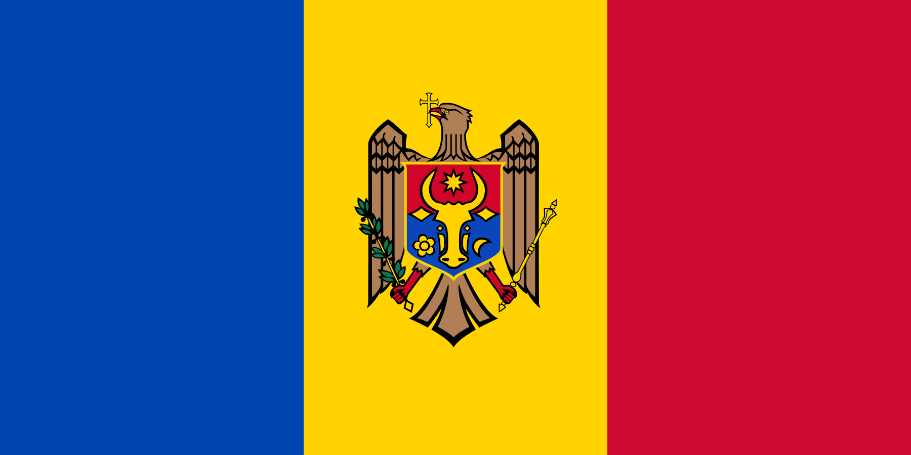

Noutăți
Pagina principalăFlori și recunoștință pentru toți lucrătorii din învățământ
De Ziua Profesorului, viitorii absolvenți ai clasei a XII-a din IPLT „Miron Costin” Florești au adus
un sincer omagiu celor care le-au îndrumat pașii și le-au luminat drumul cunoașterii.
În fiecare lecție am găsit nu doar informații, ci și înțelepciune, răbdare și curaj. Vă întâmpinăm
astăzi cu flori și cu urarea „La mulți ani!” adresată tuturor celor care muncesc zi de zi în altarul
Cunoașterii – tuturor lucrătorilor din învățământ care, prin munca lor tăcută și neobosită, dau
viață școlii noastre.
Cei care ne deschid porțile cunoașterii, cei care asigură buna rânduială, cei care veghează la
confortul și siguranța noastră – sunteți parte din familia școlii. Vă mulțumim pentru sprijin,
răbdare și devotament! Împreună construiți mediul în care noi, elevii, putem crește și deveni
oameni.
Cu mult drag,
viitorii absolvenți ai clasei a XII-a
Alegeri în Consiliul de Elevi la IPLT „Miron Costin” Florești
Astăzi, 2 octombrie 2025, în incinta IPLT „Miron Costin” Florești, s-au desfășurat alegerile pentru Consiliul de Elevi. Elevii claselor VII–XII au avut ocazia să experimenteze un exercițiu democratic: să candideze, să-și prezinte ideile și să voteze în cadrul școlii. Această experiență contribuie la dezvoltarea culturii participării, a responsabilității civice și a conștiinței că fiecare vot contează. Coordonatorii procesului electoral au fost dir. adj. educație Ala Colesnic și profesoara de istorie și educație electorală Galina Bogdan. Comisia electorală a fost formată din elevii clasei a XI-a A, care, împreună cu profesorii și cu sprijinul comunității școlare, au asigurat desfășurarea corectă și matură a alegerilor. Prin aceste alegeri, elevii învață despre democrație, dreptul la opinie și procedurile electorale, având un rol activ în viața școlii. Mulțumim tuturor pentru implicare și pentru susținerea acestui proces democratic.
Împreună pentru valori
Împreună pentru valori – o activitate interactivă care s-a desfășurat astăzi în IPLT „M. Costin”
Florești, în cadrul decadei educației pentru valorile naționale. Dezvoltarea sentimentului de
apartenență și a responsabilității civice, fiind linia valorică a acestei decade, s-a manifestat pe
tot parcursul desfășurării activităților propuse. Ghidul evenimentului a fost directorul adjunct de
educație, A. Colesnic. Drept mentori ai elevilor de clasa a V-a au fost colegii mai mari de clasa a
XII-a, care i-au ghidat, i-au îndrumat și i-au susținut în diferite exerciții, iar dirigintii de
clasă E. Munteanu, E. Șalamac, V. Moșneguțu și O. Stan le-au insuflat încredere în propriile forțe,
picurând în sufletul fiecăruia curaj și dragoste, îndemnându-i spre lucruri mărețe.
Pe parcurs, toți cei 112 elevi de clasa a V-a au conștientizat că doar împreună pot împărtăși
valorile care îi apropie și îi fac mai puternici ca comunitate. Au fost antrenați în mai multe
activități: „Arborele valorilor”, „Busola Prieteniei”, „Lanțul faptelor bune” (realizarea unui
filmuleț video), „Manifestul Valorilor” (comportamente pozitive pe care elevii le-au identificat,
le-au semnat și și-au luat angajamentul să le respecte).
La finalul activității, elevii au dobândit următoarele achiziții: cunosc conceptul de valoare și
semnificația acesteia, fac diferența dintre comportamente pozitive și negative, își formează o
imagine clară despre rolul valorii într-o comunitate, formulează și respectă reguli comune și
colaborează constructiv cu colegii, profesorii și părinții.
În concluzie, elevii au susținut că, împreună, pot face lumea mai bună.
⚫🔴🟡 DeutschMobil 2025 ⚫🔴🟡
Vizita reprezentantelor Centrului Cultural German Goethe-Zentrum Chișinău la IPLT „Miron Costin” Florești, doamnele Corina Gîrla și Rusu Diana, a adus mult soare și căldură în liceul nostru 🌞 ❤️️. În cadrul proiectului DeutschMobil, ediția a III-a, elevii Liceului Teoretic „Miron Costin” din orașul Florești au beneficiat de un sprijin valoros din partea Centrului Cultural German Goethe-Zentrum Chișinău. Instituția a oferit manuale moderne din seriile 📕 Netzwerk A1 , 📗Netzwerk A2 și 📘 Dabei A2.2 , precum și planșe de lucru pentru activități interactive la orele de limba germană. Elevii clasei a V-a au participat cu interes la activități educative desfășurate de doamna Diana Rusu, descoperind o modalitate atractivă și dinamică de a învăța limba germană. La final, aceștia au primit mici surprize, care au sporit entuziasmul și motivația de a studia. Adresăm ❤️mulțumiri ⚫🔴🟡 Deutsche Botschaft Chişinău, Eberhard-Schöck-Stiftung, Hueber Verlag și Ernst Klett Sprachen, desigur și ⚫🔴🟡 Centrului Cultural German Goethe-Zentrum Chișinău pentru sprijinul și încrederea acordate. Materialele oferite constituie un suport esențial pentru desfășurarea lecțiilor și pentru stimularea interesului elevilor față de învățarea limbii germane. ❤️
Anunţ: Concurs de ocupare a funcției de director adjunct pentru instruire
IPLT „Miron Costin”
anunţă concurs pentru ocuparea funcţiei vacante
de director adjunct pentru instruire, post vacant din 4 septembrie 2025.
La concurs pot participa cetăţeni ai Republicii Moldova cu studii superioare universitare, care au o
vechime de muncă în activitatea didactică de cel puțin trei ani, care la data expirării termenului
de depunere a dosarelor nu au împlinit vârsta de 65 ani, cunosc limba română, sunt apți din punct de
vedere medical (fizic și neuropsihic) pentru exercitarea funcției, nu au antecedente penale, nu au
fost concediați în ultimii 5 ani pe baza art. 86 alin. (1) lit.g)-r) din Codul muncii al Republicii
Moldova nr. 154/2003 sau destituiți dintr-o funcție publică conform art.64 alin. (1) lit.a) și b)
din Legea nr. 158/2008 cu privire la funcția publică și statutul funcționarului public, nu au
interdicție de a ocupa funcții de conducere.
Candidaţii pentru ocuparea funcţiei de director adjunct al instituţiei de învăţământ general depun
personal sau prin reprezentant ( în biroul directorului instituției ), prin poștă sau e-mail, în
termen de până la 1august 2025, ora 17.00, dosarul de concurs care cuprinde obligatoriu următoarele
acte:
- Cererea de participare la concurs, al cărei model este specificat în anexa nr. 1 la Regulament (se indică lista actelor depuse, cu paginile numerotate);
- Copia actului de identitate;
- Copia/copiile actului/actelor de studii autentificate;
- Copiile actelor autentificate care atestă vechimea în activitatea didactică a candidatului;
- Curriculum vitae de model Europass, specificat în anexa 2 la Regulament;
- Certificatul medical care atestă faptul că persoana este aptă din punct de vedere medical, fizic (eliberat de medicul de familie) și neuropsihic (eliberat de medicul psihiatru și medicul narcolog) pentru exercitarea funcției;
- Cazierul judiciar sau declarația pe propria răspundere;
- Declarația pe propria răspundere că nu are interdicție de a ocupa funcții de conducere și că nu a fost concediată în ultimii 5 ani pe baza art. 86 alin. (1) lit.g)-r) din Codul muncii al Republicii Moldova nr. 154/2003 sau destituiți dintr-o funcție publică conform art.64 alin. (1) lit.a) și b) din Legea nr. 158/2008 cu privire la funcția publică și statutul funcționarului public;
- Copia/copiile actului/actelor autentificate ce confirmă gradul didactic/managerial și/sau titlul științific/științifico-didactic;
- Copiile actelor care atestă formarea profesională continuă, performanțele profesionale și manageriale demonstrate în cadrul concursurilor locale/naționale/internaționale, statutul de expert/evaluator național/internațional, lista publicațiilor didactice și științifice;
- Acte care confirmă participarea la proiecte educaționale, comunitare/corporative, sau a altor proiecte relevante etc.
Concursul se va desfășura în cadrul IPLT „Miron Costin” în 3 etape:
- Verificarea îndeplinirii condițiilor de participare la concurs ;
- Evaluarea cunoștințelor profesionale și manageriale (susținerea testului la CTICE);
- Interviul (1. prezentarea viziunii manageriale pentru următorii 5 ani de activitate pe domeniul educație ce urmează să conțină: 1. contextul general, analiza SWOT, viziunea managerială, prioritați; 2. rezolvarea unor situații – problemă ( studiu de caz)).
Dosarele de concurs vor fi depuse la IPLT „Miron Costin”, biroul directorului, până la data 1
august
2025, inclusiv, ora 17.00.
Adresa: or. Florești, str. I. Creangă 3
Telefoane de contact: 069498283; 0250-2 12 71
E-mail: liceulmiron.costin@gmail.com
Pentru informații detaliate a se consulta Regulamentul pentru ocuparea funcției de director adjunct pe situl Ministerului.
Festivalul Cadrelor Didactice al Creației Artistice
Festivalul Cadrelor Didactice al Creației Artistice din 4 mai 2025 a fost un eveniment care a valorificat cultura, talentul, măiestria, sensibilitatea și vocația profund umanistă a celor care modelează sufletele copiilor nu numai prin știință, ci și prin artă. În această zi, ne-am aflat pe scenă ca artiști adevărați, ca oameni ai inspirației, care știm că educația se face cu har și cu inimă. Acest festival este dovada grăitoare că spiritul creativ nu se oprește la marginea catedrei, ci merge mult mai departe – în poezie, dans, cântec, teatru și în toate formele prin care sufletul se exprimă. Trăim vremuri în care educația are nevoie, mai mult ca oricând, de frumusețe și de modele vii. Iar noi, profesorii, suntem persoanele potrivite care, dincolo de programa școlară, oferim copiilor sensibilitate, dragoste și frumos. Echipa IPLT „M. Costin” Florești a demonstrat succese mari la următoarele genuri ale artei: muzică, dans, poezie, plasându-se pe locuri de frunte la categoriile respective.
Dezvoltarea profesională și personală – Echilibru dintre viața profesională și cea personală.
La 3 aprilie in incinta IPLT ,,M. Costin,, s-a desfasurat seminarul metodologic raional al
directorilor adjuncti pentru instruire si educatie cu subiectul Dezvoltarea profesională și
personală–Echilibru dintre viața profesională și cea personală.
Moderatorii acestui seminar au
fost
directoarele adjuncte ale liceului - A. Samoil, A. Colesnic si S. Oala. Scopul seminarului a fost -
conștientizarea importanței echilibrului între viața profesională și personală, reliefarea
impactului pozitiv al unui echilibru sănătos asupra sănătății mintale și fizice a angajaților din
educație, identificarea factorilor care influențează echilibrul între aceste doua domenii de
activitate, dezvoltarea unor strategii eficiente pentru îmbunătățirea echilibrului, promovarea unei
culturi organizaționale care sprijină echilibrul.
Cei implicati au avut parte de o agenda a
zilei pe
cat de utila pe atat si de placuta, deoarece au raspuns tuturor provocarilor din partea
moderatorilor. Activitatile s-au dovedit a fi productive, constructive dar si afective in cadrul
carora s-au promovat si impartasit bunele practici.
Multumim DGE Floresti, directoarei IPLT
,,M.
Costin,, T. Moscalu pentru incurajare, consiliului de elevi al institutiei si , desigur, cadrelor
didactice care au fost receptivi la apel si ne-au ajutat in pregatiri, în special - V. Dichii, C.
Balan, T. Ulla, S. Boldirescu.
Călătorie prin țările lumii: Germania
În anul de studii 2025, în luna februarie, echipa IPLT „M. Costin” a călătorit în Germania. În
cadrul proiectului rațional Călătorie prin țările lumii , instituția noastră sa învrednicit din nou
de LOCUL I dintre cele nouă instituții participante.
Prin muncă asiduă a profesorilor de arte și sport – A. Colesnic, T. Ulla, C. Balan și S. Sintov –,
prin efortul, dorința și energia nelimitată a elevilor de a crea frumosul, sprijinul enorm și sincer
al colegilor de serviciu – prof. de limba germană T. Procopii, prof. de educație pentru societate V.
Dichii, bibliotecara N. Șura –, dar și al părinților din clasa a Va, precum Cheselita Natalia, și al
agentului care a susținut acest concurs, Vitalie Racovschi, manager al proiectului Alimentează-te cu
sens , implementat de Asociația Obștescă „KATALYST” în parteneriat cu GhildFund Federal pentru
Cooperare financiară a Germaniei și a Ministerului Economic și de Cooperare Germană. doamna Bulat
Violeta, am avut o prestație artistică de valoare.
Acest concurs are un impact enorm asupra elevilor: motivează spre cercetare, valorifică
creativitatea, facilitează cunoașterea altor culturi, încurajează lucrul în echipă, învățarea prin
colaborare și acceptarea diferențelor.
Un sincer și profund mulțumesc tuturor celor implicați!
STEAM pentru elevi
În cadrul proiectului educațional STEAM, care prevede aplicarea conceptelor STEAM
(interdisciplinaritatea disciplinilor de studii) în IPLT „Miron Costin”, în data de 04.02.2025, a
fost lansat procesul de inovare în predarea științelor STEAM.
Sub ghidarea profesorilor de biologie – Donos Ludmila, fizică – Mișcoi Angela și Țîbrigan Valentina,
chimie –
Munteanu Elena și informatică – Strătilă Angela, elevii claselor a XI-a A și a XI-a C au prezentat
proiectul STEAM „Călătorie spre sănătate într-un spațiu de recreere”.
Acest proiect are ca scop crearea, în cadrul școlii, a unui spațiu de recreere și lectură pentru
îmbunătățirea stării generale de bine a elevilor.
Elevii claselor a XI-a au demonstrat cunoștințe și abilități interdisciplinare și inovatoare în
aplicarea tehnologiilor moderne.
Ambele echipe au făcut cercetări și au colaborat în realizarea produselor proiectului:
- Carte digitală pe platforma Storyjumper.com;
- Buletin informativ „Factorii de risc și influența lor asupra sănătății sistemului nervos la om”;
- Tabel cu date privind caracteristicile mediului;
- Model 2D/3D al spațiului de recreere;
- Prototipul spațiului de recreere.
- Perioada de realizare: 01.10.2024 – 15.12.2024.
Echipa clasei a XI-a A a fost alcătuită din următorii elevi: Groza Iulius-Cezar, Railean Vlada,
Prozorovschi Irina, Statii Daria, Lozovschi Vitalia, Brașnuev Mihai, Cuharenco Ana, Lazarenco
Daniel.
Echipa clasei a XI-a C a fost alcătuită din următorii elevi: Codreanu Dana, Burduja Laura, Răileanu
Alexandra, Groza Vasile, Marinescu Tatiana, Sîrbu Nicolae.
Aceste proiecte au fost coordonate de către directoarea adjunctăȘ Mișcoi Angela.
Proiectele au fost prezentate și evaluate, astfel la final s-a concluzionat că elevii au avut o
colaborare sănătoasă și bine
organizată, evidențiind diversele competențe precum: cercetare, spirit de echipă, colaborare,
tehnici și practici de elaborare a machetelor, competențe pe
care aceștia le dezvoltă zilnic în cadrul orelor de curs la IPLT „Miron Costin”.
Mihai Eminescu - Luceafăr al literaturii române
La data de 15 ianuarie, în incinta L.T „ Miron Costin “ , s-a desfășurat activitatea închinată marelui Luceafăr al literaturii române Mihai Eminescu, care în acest an împlinește 175 de ani de la naștere. Eminescu a fost un critic al societăți sale, un jurnalist curajos care a luptat pentru dreptate și libertate. Prin articolele sale publicate în „ Timpul” , el a militat pentru o Românie demnă, întemeiată pe valori solide și respect pentru identitatea națională. Mesajele sale rămân actuale, invitându-ne să reflectăm asupra responsabilităților noastre față de trecut și viitor. Elevii liceului, ghidați de profesorii de limba și literatură română, l-au celebrat pe Eminescu prin recitări de poezie, interpretări de cântece pe versurile poetului, creații proprii dedicate autorului. Moderatoarele activități, Chiviriga Andreea și Baran Mădălina, elevele din clasele a XII-a , au îndemnat elevii să-și asume responsabilitatea de a duce mai departe mesajul marelui Eminescu, și de a deveni ei înșiși „luceferi” care luminează calea generațiilor viitoare .
Concurs pentru ocuparea funcţiei vacante de director adjunct pentru instruire și educaţie (0,5 unităţi) în sucursala Gimnaziul „Petru Lucinschi” din s. Rădulenii Vechi
La concurs pot participa cetăţeni ai Republicii Moldova cu studii superioare universitare, care au o
vechime de
muncă în activitatea didactică de cel puțin trei ani, care la data expirării termenului de depunere
a dosarelor nu au
împlinit vârsta de 65 ani, cunosc limba română, sunt apți din punct de vedere medical (fizic și
neuropsihic) pentru
exercitarea funcției, nu au antecedente penale, nu au fost concediați în ultimii 5 ani pe baza art.
86 alin. (1) lit.g)-r)
din Codul muncii al Republicii Moldova nr. 154/2003 sau destituiți dintr-o funcție publică conform
art.64 alin. (1)
lit.a) și b) din Legea nr. 158/2008 cu privire la funcția publică și statutul funcționarului public,
nu au interdicție de
a ocupa funcții de conducere.
Candidaţii pentru ocuparea funcţiei de director adjunct al instituţiei de învăţământ general depun
personal sau
prin reprezentant ( în biroul directorului instituției ), prin poștă sau e-mail, în termen de până
la 17 februarie 2025,
ora 17.00, dosarul de concurs care cuprinde obligatoriu următoarele acte:
- cererea de participare la concurs, al cărei model este specificat în anexa nr. 1 la Regulament (se indică lista actelor depuse, cu paginile numerotate);
- copia actului de identitate;
- copia/copiile actului/actelor de studii autentificate;
- copiile actelor autentificate care atestă vechimea în activitatea didactică a candidatului;
- curriculum vitae de model Europass, specificat în anexa 2 la Regulament;
- certificatul medical care atestă faptul că persoana este aptă din punct de vedere medical, fizic (eliberat de medicul de familie) și neuropsihic (eliberat de medicul psihiatru și medicul narcolog) pentru exercitarea funcției;
- cazierul judiciar sau declarația pe propria răspundere;
- declarația pe propria răspundere că nu are interdicție de a ocupa funcții de conducere și că nu a fost concediată în ultimii 5 ani pe baza art. 86 alin. (1) lit.g)-r) din Codul muncii al Republicii Moldova nr. 154/2003 sau destituiți dintr-o funcție publică conform art.64 alin. (1) lit.a) și b) din Legea nr. 158/2008 cu privire la funcția publică și statutul funcționarului public;
- copia/copiile actului/actelor autentificate ce confirmă gradul didactic/managerial și/sau titlul științific/științifico- didactic;
- copiile actelor care atestă formarea profesională continuă, performanțele profesionale și manageriale demonstrate în cadrul concursurilor locale/naționale/internaționale, statutul de expert/evaluator național/internațional, lista publicațiilor didactice și științifice;
- acte care confirmă participarea la proiecte educaționale, comunitare/corporative, sau a altor proiecte relevante etc.
Concursul se va desfășura în cadrul Gimnaziului „Petru Lucinschi” din s. Rădulenii Vechi, sucursala
IPLT „Miron
Costin” în 3 etape:
1) verificarea îndeplinirii condițiilor de participare la concurs ;
2) evaluarea curriculum vitae;
3) interviul (1. prezentarea viziunii manageriale pentru următorii 5 ani de activitate pe domeniul
educație ce
urmează să conțină: contextul general, analiza SWOT, viziunea managerială, prioritați; 2. rezolvarea
unor situații
– problemă ( studiu de caz)).
Dosarele de concurs vor fi depuse la IPLT „Miron Costin”, biroul directorului, până la data 17
februarie 2025,
inclusiv, ora 17.00.
Adresa: or. Florești, str. I. Creangă 3
Telefoane de contact: 069498283
E-mail: liceulmiron.costin@gmail.com
Ultima zi din semestrul I cu daruri dulci de la Moș
În ajunul Crăciunului, pe 24 decembrie, atmosfera de sărbătoare a cuprins fiecare colț al liceului
„Miron Costin”. Spiritul festiv a transformat sălile de clasă într-un loc al bucuriei și al magiei,
aducând împreună elevi, profesori și oaspeți speciali.
Moș Crăciun, însoțit de entuziastul Consiliu al Elevilor, a adus zâmbete largi și sclipiri de
fericire în ochii tuturor. Elevii au recitat poezii pline de farmec, au împărtășit mesaje călduroase
și s-au bucurat din plin de darurile pregătite cu grijă.
Atmosfera a fost una încărcată de emoție, veselie și solidaritate. Fiecare moment trăit împreună a
devenit o amintire de neuitat, o dovadă că adevărata magie a sărbătorilor prinde viață doar atunci
când suntem uniți.
Această activitate a fost mai mult decât o celebrare; a fost o reamintire că bucuria sărbătorilor
izvorăște din generozitate, prietenie și momentele petrecute alături de cei dragi.!!!
La mulți ani🥳și un an nou plin de reușite!
16 zile de activism împotriva violenței în bază de gen
Astăzi, 12 decembrie 2024, în cadrul Campaniei Naționale „16 zile de activism împotriva violenței pe bază de gen”, pentru elevii claselor a X-a – a XII-a, s-a desfășurat un seminar cu genericul „Părinții noștri ca modele de gen în viață”. Activitatea face parte din îndemnul Consiliului Elevilor al liceului și a fost desfășurată în parteneriat cu directorul adjunct de educație, A. Colesnic, și psihologul N. Zamirovschi. Prin diverse metode și tehnici de lucru – evocare, realizare de sens, reflecții, argumentări, feedback, lucrul în grup – elevii au dezbătut problema în cauză. Transmiterea valorilor și comportamentelor legate de gen, influența asupra alegerilor și intereselor copilului, exemplul personal în relația părinților, gestionarea emoțiilor și expresia acestora, învățarea prin contradicții, rolul nemijlocit al părinților în combaterea stereotipurilor, majoratul și echitatea de gen, empatia de gen au fost întrebările din ordinea de zi în care elevii și-au expus părerea și opțiunea. În concluzie, s-a evidențiat rolul părinților ca fiind primordial în viața copilului, aceștia fiind primele și cele mai importante modele de gen, deoarece părinții sunt cei care îi ajută pe copii să își formeze identitatea de gen, percepția despre rolul de gen și atitudinile față de sine, dar și față de sexul opus.
Pedagogie cu inimă
Pe 6 decembrie 2024, la IPLT „Miron Costin” Florești, a avut loc un eveniment deosebit, dedicat lansării celei mai recente lucrări a scriitoarei Mariana Marin "Pedagogie cu inimă". Elevii și profesorii liceului au avut ocazia să participe la o întâlnire captivantă cu autoarea, care le-a împărtășit procesul creativ din spatele cărții sale și sursele de inspirație. Evenimentul a fost un schimb de idei și emoții, elevii punând întrebări și discutând despre temele abordate în lucrare. Mariana Marin a subliniat importanța literaturii ca mijloc de educație continuă și dezvoltare personală, încurajând tinerii să își urmeze visurile și să aprecieze puterea cuvintelor. Lansarea cărții a fost o oportunitate pentru tineretul din Florești de a înțelege mai profund impactul literaturii asupra vieții lor, lăsându-le o amintire de neuitat despre importanța educației și a culturii în formarea lor ca indivizi.
Balul Bobocilor din 10 - ediția a V-a
Vineri, 29 noiembrie, a avut loc mult așteptatul Bal al Bobocilor, un eveniment memorabil organizat
de clasele a X-a A, B și C. Spectacolul, pregătit cu multă muncă și entuziasm de către elevi, a
cuprins o serie de probe interactive și amuzante: defilarea cu ținute de gală, „Ghicește melodia”,
întrebări de inteligență și provocarea „Tema de acasă”, care a presupus pregătirea unui banc și a
unei scenete hazlii, video de Tiktok. Publicul a fost captiv de energie și creativitatea celor trei
clase, iar
aplauzele s-au auzit neîncetat pe parcursul întregii serii.
Fiind vorba despre cea de-a 5-a ediție a acestui eveniment, fiecare clasă a fost premiată pentru
originalitate și creativitate, iar atmosfera a fost una de apreciere și susținere reciprocă. „Acolo
unde există colaborare, va domni mereu pacea” a fost mesajul central al acestei ediții,
încurajându-i pe toți participanții să renunțe la concurență în favoarea unei colaborări fructuoase,
care să promoveze valoarea păcii în lume.
Prin acest bal al bobocilor, elevii din clasa a 10-a nu doar că au demonstrat talent și
ingeniozitate, dar au și transmis un mesaj important despre unitate și armonie, reafirmând că în
colaborare se află adevărata putere.
Dezbateri: Inteligența artificială – prietenul elevului actual
Pe 29 noiembrie, în incinta Liceului Teoretic „Miron Costin”, s-a desfășurat o dezbatere captivantă
pe tema „Inteligența artificială – prietenul elevului actual”. Evenimentul a adus față în față două
echipe ambițioase: echipa afirmatoare a Liceului Teoretic „Mihai Eminescu” și echipa negatoare a
gazdelor. Subiectul a generat discuții aprinse, dar constructive, punând în lumină atât avantajele,
cât și provocările pe care le aduce utilizarea inteligenței artificiale în educație.
Dezbaterea de la Liceul „Miron Costin” a fost mai mult decât o confruntare de idei; a fost o
oportunitate pentru elevi să-și exerseze gândirea critică și să înțeleagă cum să abordeze
tehnologiile emergente. În final, nu doar inteligența artificială a câștigat, ci și inteligența
colectivă a elevilor. Această întâlnire a demonstrat că viitorul educației aparține unui echilibru
între tehnologie și umanitate, iar elevii de astăzi sunt perfect pregătiți să construiască acest
echilibru.
Deși ambele echipe au oferit argumente bine documentate, dezbaterea nu a desemnat un câștigător
clar. În schimb, s-a ajuns la un consens surprinzător: inteligența artificială poate fi un prieten
valoros al elevului actual, dar doar dacă este utilizată cu discernământ. Elevii prezenți în public
au concluzionat că inteligența artificială este o unealtă puternică, dar trebuie folosită
responsabil, în combinație cu gândirea critică, creativitatea și îndrumarea profesorilor.
Din sufletul toamnei
Luna noiembrie a adus culoare și inspirație în incinta Liceului „Miron Costin”, unde elevii au
participat la două concursuri deosebite „Din sufletul toamnei”, o expoziție dedicată bogăției
anotimpului aurit, și „Școala mea – o altă Terra” concursul de pictură și desen dedicat jubileului
de 50 de ani ai instituției.
Evenimentul a culminat cu premierea participanților, un moment emoționant care a adus zâmbete pe
fețele tuturor. Elevii au fost felicitați pentru efortul și originalitatea lor și de-asemenea au
fost îndulciți și recompensați cu diplome și premii bănești.
Luna noiembrie a demonstrat, încă o dată, că IPLT „Miron Costin” este un loc unde arta, literatura
și educația se îmbină armonios, contribuind la dezvoltarea tinerelor talente.
Tradițiile valoroase ale școlii, combinate cu inițiativele moderne, asigură un viitor luminos pentru
toți cei care fac parte din această comunitate deosebită.
Le mulțumim din toată inima agenților economici . S.R. L. ,,ACER - Com S. C. D-lui Cernei Andrei și
Chihai Gheorghe,dumnealor fiind părinții, elevilor cărora ce își fac studiile la ,,Miron Costin”,
de-asemenea aducem mulțumiri Consiliu de Elevi, îndeosebi Ciumac Ana-Maria ce a intervenit cu ideea,
Goia Marina și Golban Maria-Daniela ce-au au fost în comisia de evaluare a picturilor alături de
profesorul de arte Sochirca Alexandru și nu în ultimul rând profesoarelor Balan Cristina și Ala
Colesnic.
Viitorul copilului depinde de colaborarea dintre școală și familie
Tema respectivă a fost elucidată în cadrul unui seminar cu părinții elevilor din clasele VII-IX, de către directorul adjunct pentru educație A. Colesnic și psihologul N. Zamirovschi, pe 28 noiembrie 2024, în vederea creării unui parteneriat activ și constructiv, punând accent pe activitățile ambelor părți în procesul educațional. Prin diverse metode și tehnici de lucru, părinții au fost sensibilizați cu privire la importanța colaborării școală-familie asupra dezvoltării academice și morale a copilului. S-au relevat unele metode și strategii de comunicare care să ducă la o înțelegere reciprocă în rezolvarea problemelor, au fost clarificate responsabilitățile școlii, dar și ale familiei. Încurajarea implicării părinților în evenimentele școlare și extrașcolare pentru a crea un mediu afectiv integrat a fost, de asemenea, un punct central, iar totodată au fost elaborate planuri de acțiune care să sprijine progresul educațional. Modificările includ corectarea semnelor diacritice, a unor greșeli de punctuație și îmbunătățirea structurii frazelor pentru o mai bună claritate.
O zi de neuitat: Vizita reprezentantelor Goethe-Institut Chișinău la Liceul „Miron Costin”
Astăzi, liceul nostru 🏫 a avut onoarea să primească vizita doamnelor Culeac Mariana și Rusu Diana, reprezentante ale Goethe-Institut Chișinău 🖤❤️️💛 , în cadrul proiectului DeutschMobil. Evenimentul a adus în prim-plan importanța colaborării internaționale pentru susținerea educației lingvistice și a fost o zi plină de emoții pozitive, entuziasm și recunoștință. În timpul vizitei, elevii noștri au participat la activități interactive și captivante 🌞, conduse cu profesionalism și pasiune de doamnele de la Goethe-Institut. Aceste momente au reușit să îi inspire și să le trezească interesul pentru învățarea limbii germane. De la jocuri educative la exerciții practice, toate activitățile au fost gândite pentru a încuraja învățarea prin distracție. Reacțiile elevilor au fost pe măsură: zâmbete, curiozitate și dorința de a descoperi mai mult. Un alt punct culminant al vizitei a fost primirea 🎁 materialelor didactice deosebit de valoroase, constând în manuale 📚 pentru nivelurile A1.1, A1.2 și A2.1, destinate sprijinirii elevilor în studiul limbii germane. Aceste resurse vor aduce un plus de valoare procesului educațional și vor facilita progresul lingvistic al elevilor noștri. ✍️Dorim să le mulțumim din suflet doamnelor Rusu Diana și Culeac Mariana pentru efortul lor de a face un drum lung până la Florești și pentru dedicarea cu care sprijină educația lingvistică din Republica Moldova. Apreciem profund colaborarea cu Goethe-Institut Chișinău, care ne demonstrează că împreună putem deschide noi orizonturi pentru generațiile tinere. Această vizită a fost mai mult decât un eveniment educațional – a fost o experiență care ne-a inspirat și ne-a motivat să continuăm să construim un viitor mai bun pentru elevii noștri. Mulțumim 💕, Deutsche Botschaft Chişinău, Goethe-Institut București, Eberhard-Schöck-Stiftung, Hueber Verlag, Ernst Klett Sprachen, Cornelsen pentru sprijinul vostru necondiționat și pentru că ați adus magia limbii germane în liceul nostru!

Jubileul de 50 de ani al Liceului „Miron Costin” din Florești: O poveste de excelență și tradiție
Anul acesta, Liceul Teoretic „Miron Costin” din Florești, Republica Moldova, celebrează un moment de mare importanță – jubileul de 50 de ani. Această aniversare reprezintă nu doar o sărbătoare a trecutului, ci și un prilej de a privi cu mândrie spre realizările sale și de a contura viitorul generațiilor care îi vor trece pragul.
O jumătate de secol de educație și formare
Fondat în anul 1973, liceul a devenit un simbol al educației de calitate și un punct de referință pentru comunitatea locală. În decursul acestor cinci decenii, mii de elevi au pășit pe porțile sale, fiind ghidați de profesori dedicați, care și-au asumat misiunea de a cultiva cunoașterea, valorile morale și dragostea pentru învățătură. De-a lungul anilor, instituția a trecut prin multiple transformări și modernizări, adaptându-se cerințelor vremurilor. Cu toate acestea, un lucru a rămas neschimbat: angajamentul său față de excelență.
Evenimentele jubiliare: Un omagiu adus trecutului și o privire spre viitor
Cu ocazia jubileului, liceul a organizat o serie de evenimente menite să celebreze acest moment
unic.
Activitățile au inclus:
Jubileul de 50 de ani al Liceului „Miron Costin” din Florești: O poveste de excelență și tradiție
✅O festivitate de deschidere solemnă, la care au participat actuali și foști elevi, profesori,
părinți, precum și reprezentanți ai autorităților locale.
Jubileul de 50 de ani al Liceului „Miron Costin” din Florești: O poveste de excelență și tradiție
✅O expoziție foto-documentară, ce a ilustrat istoria liceului prin imagini și documente vechi,
oferind un prilej de nostalgie și reflecție.
Jubileul de 50 de ani al Liceului „Miron Costin” din Florești: O poveste de excelență și tradiție
✅Spectacole artistice susținute de elevii liceului, care au pus în valoare talentele multiple
dezvoltate în cadrul școlii.
Jubileul de 50 de ani al Liceului „Miron Costin” din Florești: O poveste de excelență și tradiție
✅Momente de recunoștință, în care au fost onorați profesorii pensionari și foștii directori, cei
care au pus bazele reputației de astăzi a instituției.
Liceul „Miron Costin” – un motor al dezvoltării comunității
Liceul nu este doar un spațiu al învățării, ci și un centru al vieții culturale și sociale din Florești. Prin proiecte educaționale inovatoare, participări la competiții naționale și internaționale, dar și prin parteneriate cu alte instituții, școala a contribuit la dezvoltarea armonioasă a comunității.
Privind spre viitor
Cu prilejul acestei aniversări, mesajul transmis de conducerea liceului a fost unul plin de optimism și speranță. Se dorește ca Liceul „Miron Costin” să rămână un loc în care fiecare elev să-și descopere potențialul, iar profesorii să continue să inspire generații întregi. Aniversarea de 50 de ani este, fără îndoială, o celebrare a muncii, a pasiunii și a dedicării care au definit această instituție de-a lungul decadelor. Fie ca spiritul de excelență să continue să lumineze drumul celor care își scriu povestea sub acoperișul liceului „Miron Costin”. La mulți ani, Liceul „Miron Costin”! 🏫🎉
Spune NU Traficului de ființe umane
În luna octombrie, Liceul Teoretic „Miron Costin” a organizat o amplă campanie de conștientizare asupra traficului de ființe umane, cu scopul de a educa elevii și comunitatea școlară cu privire la pericolele acestui fenomen. Campania a inclus activități creative, precum afișarea unor postere și desene pe perete realizate de elevi, care au fost expuse în holurile liceului. "Traficul de ființe umane" este o problemă care afectează milioane de persoane la nivel global, fiind una dintre cele mai grave forme de exploatare. Victimele sunt deseori atrase prin promisiuni false de locuri de muncă, educație sau o viață mai bună, ajungând ulterior în situații de sclavie modernă. Având în vedere aceste riscuri, conducerea liceului a considerat esențială informarea elevilor despre pericolele care îi pot pândi, mai ales în mediul online și prin interacțiunile zilnice. Elevii au fost încurajați să își exprime creativitatea și să contribuie cu propriile lor lucrări în cadrul campaniei. Posterele și desenele expuse au conținut mesaje puternice, menite să transmită informații despre semnele traficului de persoane și modurile prin care elevii se pot proteja. Printre desenele expuse se regăseau imagini sugestive, precum: 🔗 "Mâini legat", simbolizând lipsa libertății; 🚶♂️ "Drumuri spre necunoscu", ilustrând pericolul ofertelor tentante de muncă în străinătate; ⛓️ "Oameni înlănțuiț", sugerând capturarea și exploatarea victimelor. De asemenea, au fost transmise mesaje de tipul "Nu te lăsa păcălit " sau "„Alege siguranța, nu riscul ", pentru a atrage atenția asupra riscurilor la care se pot expune tinerii. Inițiativa Liceului „Miron Costin” de a organiza o campanie vizuală împotriva traficului de ființe umane, folosind postere și desene realizate de elevi, este un exemplu de bună practică în educația preventivă.
Cum se aleg Șefii la Miron Costin?
Astăzi, 27 septembrie, elevii clasei a V-a A, în cadrul disciplinei opționale „Educația pentru Drepturile Omului”, au participat la un exercițiu democratic inedit, alegând șeful clasei prin vot secret. Sub îndrumarea profesoarei Valeria Dichii, elevii au învățat despre importanța participării la alegeri și despre procedura corectă de vot. Cei nouă candidați care și-au dorit să fie lideri au prezentat colegilor oferte convingătoare, explicând de ce merită să fie aleși. După o săptămână de analiză a propunerilor, astăzi, 27 septembrie, elevii și-au exprimat votul de încredere. 👏🗳 În urma votului, Groza Adelina a fost desemnată învingătoare, iar Moșneguța Ana și Colța Anastasia vor ocupa funcțiile de șefe adjuncte. Felicitări și mult succes în noile responsabilități! 🎉
Electorate 2024
Astăzi, 26 septembrie 2024, Comisia Electorală a IPLT „Miron Costin” Florești, instruită și ghidată de profesoara de istorie și educație electorală G. Bogdan, în colaborare cu directorul adjunct pentru educație A. Colesnic, a desfășurat alegerile în Consiliul Elevilor al liceului pentru anul de studii curent. În rândurile Consiliului au fost recrutați elevi ai claselor a VII-a și a X-a. Este un exercițiu în care elevii învață despre democrație, dreptul la opinie, își formează aptitudini privind desfășurarea anumitor proceduri electorale și, desigur, se implică în diverse procese educaționale decizionale. Candidații au prezentat comunității școlare o platformă de activitate, urmată de scop și obiective, acordul părinților, cererea personală, dar și recomandarea dirigintelui. Alegerile în Consiliul Elevilor reprezintă un eveniment important, practicat de mulți ani în IPLT „Miron Costin”, deoarece acestea reflectă valoarea practică a democrației școlare.
Moldova Europeană – Noi suntem Europa
La data de 25 septembrie, Liceul Teoretic „Miron Costin” a avut onoarea de a-l primi în vizită pe Dr. Daniel P. Funeriu – cercetător, fost ministru al Educației, Cercetării, Tineretului și Sportului în Guvernul României (2009-2012) și Înalt Consilier al Uniunii Europene în Republica Moldova. Acesta ne-a încântat cu o prezentare captivantă despre „Moldova Europeană – Noi suntem Europa”. 🌍 Elevii și profesorii noștri au fost implicați în discuții interesante și au adresat întrebări care ne-au apropiat și mai mult de valorile europene. A fost o experiență deosebită, plină de energie pozitivă și inspirație! 💬✨ Mulțumim tuturor participanților!
Ziua Păcii - 20 septembrie
La 20 septembrie 2024, pacea sub chip de porumbel a coborât peste comunitatea școlară a IPLT „Miron
Costin” din Florești. Ziua a fost plină de activități extracurriculare, organizate în premieră, dar
care au avut un impact colosal și valoros asupra fiecărui copil, implicând majoritatea elevilor.
Galerie de artă cu produse artistice (picturi, desene, compoziții decorative, versuri,
cântece) ale
elevilor.
Minutul de Tăcere , organizat din 1984 de către organizația nonguvernamentală Pathways to
Peace.
Indiferent de fusul orar, la ora 12:00, această observare mondială a tăcerii creează un val de pace
în întreaga lume. Astfel, elevii au fost îndemnați să participe la acest act comun și practic de
construire a păcii.
Ghemul Prieteniei , care a fost „depănat”, mai bine spus, vociferat cu glas tare de întreaga
comunitate școlară printr-un angajament comun de construire a păcii, angajament care venea din inima
și sufletul fiecărui elev.
O rețetă pentru pace . Fiecare copil, dar și cadru didactic, a împărtășit-o cu colegii
și semenii de
la primele ore ale dimineții.
Astfel, elevii IPLT „M. Costin” au făurit pacea. Ei au fost îndemnați de către cadrele didactice să
nu le fie teamă să riște pentru pace, să pledeze pentru pace, să trăiască zilnic pacea prin
interacțiuni pozitive, prin gesturi mici de bunătate și compasiune, prin toleranță, respect și
înțelegere reciprocă, prin comunicare deschisă și sinceră, prin înțelegere și colaborare pentru
soluții comune, deoarece pacea se găsește în propriul suflet. Ea a fost și va fi ultimul cuvânt al
istoriei.
Către sfârșitul tuturor activităților, copiii s-au bucurat de o surpriză foarte frumoasă, plăcută și
delicioasă, oferită fiecărui elev în parte de către un agent economic receptiv și generos, foști
absolvenți ai instituției IPLT „Miron Costin”, actualmente părinți, ai căror copii își desfășoară
studiile în această instituție. Le mulțumim mult pentru că au adus și mai mult farmec acestei
sărbători.
Modul de viață sănătos pentru un preadolescent
La 19 septembrie, elevii Liceului Teoretic „Miron Costin”, în special elevii claselor VI-VII, au
beneficiat de o instruire oferită de reprezentanții Centrului Prietenos Tinerilor din cadrul
Instituției Medicale Centrul Medicilor de Familie. Elevii au fost informați despre modul de viață
sănătos pe care trebuie să-l promoveze un preadolescent, alimentația sănătoasă, activitatea fizică,
igiena personală, abandonarea obiceiurilor nocive și importanța echilibrului psihologic pentru
preadolescenți. De asemenea, s-a făcut o mică incursiune în educația sexuală. Este de menționat
faptul că această informație a fost transmisă de elevii voluntari din instituție (clasa a IX-a C),
care sunt integrați în acest centru și colaborează de ceva timp cu specialiștii în domeniu.
A avea un mod de viață sănătos nu este complicat. Cu toate acestea, doar unii dintre noi se pot
lăuda cu un set complet de astfel de abilități în viața de zi cu zi. „Iubește-ți corpul și ai grijă
de el!” – acesta a fost mesajul concluziv al elevilor la finalul activității.
Ștefanienii la noi Acasă
Voluntarii Asociației Doamna Maria Brâncoveanu din Făgăraș, județul Brașov, România, au sosit cu prilejul înființării Academiei Ștefaniene - Școala Tinerilor Voluntari din Florești, o inițiativă valoroasă sprijinită de domnul Boldirescu Sergiu. Voluntarii au petrecut câteva zile în cadrul liceului nostru, participând la diverse activități educaționale și recreative. Aceștia s-au întâlnit cu elevii, au organizat jocuri sportive și au luat parte la seminarii interactive, menite să promoveze spiritul voluntariatului și implicarea tinerilor în comunitate. Această colaborare transfrontalieră aduce o contribuție importantă comunității noastre, oferind tinerilor oportunitatea de a se dezvolta personal și social. Academia Ștefaniană își propune să sprijine „Dezvoltarea și promovarea voluntariatului în comunitățile din nordul țării, raioanele Florești, Soroca și Șoldănești,” consolidând astfel spiritul civic și responsabilitatea socială.
Liceul „Miron Costin” la Conferința Moldo-Americană
Sâmbătă, 24 august, Liceul „Miron Costin” a participat la Conferința Moldo-Americană, organizată de
America House Chișinău, la Universitatea Pedagogică Ion Creangă din Chișinău. Evenimentul a reunit
profesori și experți din Moldova, Carolina de Nord și România, care au prezentat proiecte inovatoare
în domeniul STEM.
Liceul nostru a avut onoarea de a prezenta Aplicația Mobilă Mixtape, un proiect dedicat tinerilor
NEET (care nu sunt implicați în muncă, educație sau formare). Aplicația își propune să sprijine
tinerii în construirea unui parcurs profesional solid, oferindu-le acces la noi oportunități de
carieră.
Mulțumim organizatorilor și tuturor participanților pentru această experiență valoroasă, care a pus
accent pe inovație și colaborare internațională! 🌟
Conferința Pedagogică 2024
📅 Astăzi, la IPLT „Miron Costin” din Florești, s-a desfășurat Conferința Pedagogică Școlară cu tema
„Implementarea practicilor educaționale inovatoare în parteneriatele
locale/naționale/internaționale”. Evenimentul a fost dedicat promovării proiectelor inovatoare, în
care instituția noastră a fost activ implicată.
💡 Discuțiile s-au desfășurat prin metoda Pălăriilor Gânditoare, împărțind participanții în cinci
grupuri. Aceștia au analizat și dezbătut provocările și oportunitățile implementării Centrului
multifuncțional și Hub-ului educațional, stimulând atât gândirea critică, cât și creativă.
🎯 Un punct central al conferinței a fost dezbaterea Planului de Dezvoltare Strategică al liceului
pentru perioada 2025-2030. Participanții au adus contribuții esențiale, asigurând că viitorul școlii
va reflecta nevoile și aspirațiile comunității noastre educaționale.
Mulțumim tuturor celor implicați pentru contribuțiile valoroase! Împreună, construim un viitor
educațional inovator și sustenabil! 🚀

e-ICON World Contest 2024
🎉🏆 Felicitări echipei IPLT ”Miron Costin” pentru clasarea pe locul II la Competiția Internațională
”e-ICON World Contest” din Coreea de Sud! Sub îndrumarea mentorului Tatiana Rotari, elevele Daniela
Grosu și Laura Burduja au prezentat aplicația mobilă SpotOnFocus, dezvoltată în colaborare cu elevii
de la Hankuk Academy of Foreign Studies.
Aplicația inovatoare își propune să transforme modul în care elevii se pregătesc pentru testele
școlare, facilitând învățarea eficientă și concentrată. Această realizare reprezintă un pas
important pentru învățământul modern și demonstrează creativitatea și dedicarea elevilor noștri.
Suntem extrem de mândri de această reușită și le dorim succes în proiectele viitoare! Sincere
felicitări echipei și mulțumiri mentorului lor, Tatiana Rotari, pentru ghidarea oferită. 👏🎉
Ministerul Educației și Cercetării al Republicii Moldova, Tekwill în Fiecare Școală, și Direcția
Generală Educație Florești sprijină astfel de performanțe!
Academia Basarabiei - Program interdisciplinar pentru profesorii de istorie și limba română”
Fiecare provocare ne oferă oportunitatea de a deveni mai buni, mai puternici și mai uniți. Luna lui
cuptor a venit cu o provocare frumoasă pentru 50 de profesori care au participat recent în proiectul
„Academia Basarabiei - Program interdisciplinar pentru profesorii de istorie și limba română”,
organizat de Universitatea de Stat din Moldova și AGIRoMd, finanțat de Departamentul pentru Relația
cu Republica Moldova. Acest program, desfășurat în perioada 4-7 iulie 2024, a avut ca scop
consolidarea legăturilor culturale și educaționale dintre România și Republica Moldova, oferind un
cadru propice pentru schimbul de experiențe și dezvoltarea profesională a cadrelor didactice.
„Academia Basarabiei” și-a propus să îmbunătățească colaborarea între profesorii de pe ambele maluri
ale Prutului, creând oportunități de dialog și învățare reciprocă. Din partea Liceului Teoretic
„Miron Costin” din orașul Florești a participat domnul Sergiu Boldirescu, profesor de istorie,
religie și dezvoltare personală.
Acest program a avut un impact semnificativ asupra dezvoltării profesionale a profesorilor
implicați. Prin intermediul workshop-urilor și sesiunilor de formare, participanții au avut ocazia
să exploreze noi metodologii didactice, să împărtășească experiențe cu alți profesori și să își
lărgească orizonturile educaționale.
„În cadrul Academiei am fost implicat în diverse activități care ne-au oferit perspective noi asupra
predării istoriei și limbii române. De asemenea, în cadrul programul au fost abordate teme de
actualitate educațională, paneluri de discuții, pachete cultural-turistice și vizite culturale și
istorice relevante datorită locației în care s-au desfășurat activitățile Academiei, toate acestea
contribuind la îmbogățirea cunoștințelor noastre și la dezvoltarea abilităților noastre pedagogice”,
a relatat Prof. Sergiu Boldirescu.
Prin participarea la Academia Basarabiei, profesorii au demonstrat un angajament față de excelența
în educație și un interes continuu pentru îmbunătățirea metodologiilor de predare. Experiențele
acumulate în cadrul acestui program vor fi cu siguranță valorificate în activitatea didactică,
astfel contribuind la formarea unor elevi mai bine pregătiți și mai motivați.
Proiectul „Academia Basarabiei” se dovedește a fi o inițiativă esențială pentru dezvoltarea
profesională a profesorilor, întărind legăturile dintre România și Republica Moldova și promovând un
schimb cultural și educațional benefic pentru ambele părți. Academia Basarabiei, ediția I,
desfășurată în perioada 4-7 iulie de către Universitatea de Stat din Moldova și AGIRoMd, a luat
sfârșit.
La finalul ediției I, putem afirma că Academia Basarabiei este un moment de mândrie și inspirație.
Am învățat, am crescut și am legat prietenii care ne vor însoți pe tot parcursul vieții. Academia
Basarabiei este un succes și totodată începutul unei călătorii extraordinare.
Mulțumim mult, Dnei Mariana Marin, președinta AGIRoMd și tuturor celor care au contribuit la
desfășurarea acestui eveniment minunat! Reverențe, domnule Igor Șarov, președinte al Academiei
Basarabiei, pentru inspirația de a crea acest program interdisciplinar pentru profesorii de istorie
și limba română.
Concurs de admitere în clasa a X-a la IPLT "Miron Costin"
IPLT "Miron Costin" din Florești organizează concursul de admitere în clasa a X-a, pentru
profilurile umanist și real, pentru anul de studii 2024-2025.
Perioada de depunere a actelor pentru înscriere:
6 iulie - 10 august 2024
Concursul se va desfășura în două etape:
Etapa I:
6 - 25 iulie 2024:
6 - 15 iulie 2024: depunerea actelor pentru înscrierea la concurs
17 - 19 iulie 2024: concursul dosarelor (calcularea mediilor de concurs și stabilirea listei finale
a elevilor admişi în baza mediei de concurs)
20 iulie 2024: anunțarea rezultatelor concursului de admitere
Etapa II:
1 - 10 august 2024:
1 - 4 august 2024: depunerea actelor pentru înscrierea la concurs
5 august 2024: concursul dosarelor (calcularea mediilor de concurs și stabilirea listei finale a
elevilor admişi în baza mediei de concurs)
6 august 2024: anunțarea rezultatelor concursului de admitere
Actele necesare pentru înscriere:
✔️ Cererea candidatului
✔️Copia buletinului de identitate
✔️ Certificatul de studii gimnaziale original și copie
Certificat medical F-086
✔️ 4 poze 3x4
Pentru informații suplimentare, apelați:
Telefon: 025021271
Email: liceulmiron.costin@gmail.com
Website: https://mironcostin.md/
Adresă:
Orașul Florești, str. Ion Creangă 3
IPLT "Miron Costin" este o școală cu o tradiție îndelungată și o reputație excelentă. Oferă elevilor
o educație de calitate, care îi pregătește pentru succes în învățământul superior și pe piața
muncii.
Concursul de admitere este riguros, dar elevii care sunt motivați și talentați vor avea șansa de a
obține un loc la una dintre cele mai bune școli din Florești.
Vă invităm să vă înscrieți la concursul de admitere și să faceți parte din comunitatea IPLT "Miron
Costin"!
De ce să alegeți IPLT "Miron Costin"?
✔️Profesori calificați și dedicați
✔️O gamă largă de programe educaționale
✔️ Un mediu de învățare stimulativ și prietenos
✔️ Oportunități de a participa la diverse activități extracurriculare
✔️ O comunitate de elevi și profesori suportivă
IPLT "Miron Costin" - O alegere bună pentru viitorul tău!
Școala securității - Împreună reducem riscurile
La 28-29 mai 2024, echipa "Pyro" a instituției noastre, formată din elevi de clasa a X-a, a participat la concursul anual "Școala securității - Împreună reducem riscurile", organizat în parteneriat cu IGSU Florești. La această ediție din 2024, din cele 9 echipe înscrise, Pyro s-a clasat pe locul 4, fiind recompensată cu o diplomă pentru implicare și participare activă. Elevii au demonstrat curaj și cunoștințe bine formate în prevenirea și diminuarea riscurilor cotidiene și a situațiilor de urgență. Concursul le-a oferit ocazia de a-și îmbunătăți pregătirea pentru calamități și dezastre naturale, evidențiind competențele lor în gestionarea riscurilor.
Ziua tricolorului
Sub îndrumarea dedicată a doamnei Ala Colesnic și a doamnei Tatiana Ulla, elevii din IPLT "Miron Costin" Florești au susținut o zi tricolorului de excepție, chiar și în condițiile unei vremi nefavorabile. Dansurile lor pline de grație, poeziile încărcate de patriotism și cântecele mărețe au reușit să încânte inimile publicului prezent pe piața centrală. Membrilor Consiliului Raional li s-au adresat cuvinte de apreciere pentru sprijinul neîncetat, iar participarea DGE Florești a adus un plus de solemnitate evenimentului. Organizatorilor li se adresează sincere mulțumiri, iar elevilor le transmitem recunoștința noastră pentru curajul de a participa în ciuda vremii reci și înnorate. A fost o zi de sărbătoare și solidaritate, în care comunitatea a celebrat cu mândrie tricolorul național.
Masterclass de Ciocolată
Ciocolata este preparată din fructul Theobroma cacao, provenit de la un copac tropical al cărui nume în greacă înseamnă „hrana zeilor”. Această delicatesă nu doar încântă papilele gustative, ci și aduce numeroase beneficii pentru sănătatea inimii și a creierului. În cadrul unei activități educative și interactive, în jur de 35 de copii din cadrul Instituției Publice Liceul Teoretic “Miron Costin” au avut ocazia să descopere aceste aspecte fascinante despre ciocolată și alte secrete culinare. Această inițiativă face parte din proiectul “Alimentează-te, cu sens! - Sporirea calității nutriționale în vederea asigurării unui regim alimentar sănătos pentru 1000 de copii din zonele rurale ale Republicii Moldova”, implementat de Asociația Obștească “Katalyst” în parteneriat cu ChildFund Germania și cu sprijin financiar din partea Ministerului Federal German pentru Cooperare Economică și Dezvoltare. Felicitări organizatorilor pentru această inițiativă valoroasă! Astfel de activități nu numai că aduc cunoștințe noi și interesante copiilor, dar și contribuie la promovarea unui stil de viață sănătos și echilibrat în rândul tinerilor din comunitate.
Haideți, fetelor
La data de 28 martie 2024, în cadrul Instituției Publice Liceul Teoretic "Miron Costin", s-a
desfășurat activitatea intitulată "Haideți, fetelor", organizată de către Consiliul Elevilor. Scopul
acestei activități a fost să formeze spiritul de echipă și să dezvolte potențialul creativ/artistic
al elevilor.
Au avut loc numeroase probe în cadrul cărora fiecare echipă trebuia să-și demonstreze valoarea
spiritului, frumuseții și inteligenței feminine. Probele au fost următoarele:
- Prezentarea;
- Proba artistică;
- Proba de inteligență;
- Proba Bubulina-Gospodina;
- Proba machiajului și prezentarea fotomodelului
Toate cele trei echipe au muncit și au demonstrat colaborarea în echipă, însă doar una a fost în cele din urmă învingătoare. Aceasta a fost clasa a 8-a "A", care s-a clasat pe locul I, clasa a 8-a "C" pe locul II și clasa a 8-a "B" pe locul III. Toți elevii și-au pus în valoare talentele și spiritul de echipă, iar munca depusă în pregătirea pentru această activitate a fost remarcabilă.

Importanța unei alimentații echilibrate
"Importanța unei alimentații echilibrate pentru o viață sănătoasă"a fost genericul atelierului de
lucru organizat astăzi, 23.03.2024, în incinta IPLT ,,Miron Costin” Florești. În jur de 20 copii au
avut posibilitatea de a discuta сu trainerul Cristina Balan despre cum alimentația poate influența
starea de sănătate și cum copii pot adopta obiceiuri sănătoase și echilibrate pe termen lung.
Această activitate a fost realizată în cadrul proiectului “Alimentează-te, cu sens! - Sporirea
calității nutriționale în vederea asigurării unui regim alimentar sănătos pentru 1000 de copii din
zonele rurale ale Republicii Moldova” implementat de Asociația Obștească “Katalyst” în parteneriat
cu ChildFund Germania și sprijinul financiar al Ministerului Federal German pentru Cooperare
Economică și Dezvoltare.
În calitate de parteneri ai acestui proiect IPLT ,,Miron Costin” Florești își propune să contribuie
la îmbunătățirea alegerilor alimentare sănătoase în rândul copiilor și promovarea unui consum
responsabil de fructe și legume.
Împătimiți de Poezie.
În atmosfera plină de pasiune pentru poezie, la 21 martie 2024, în incinta IPLT "M. Costin", s-a desfășurat un eveniment dedicat Zilei Mondiale a Poeziei. În cadrul acestuia, elevii au participat la un concurs organizat de Consiliul de Elevi al instituției, reunindu-se cu dragoste pentru versuri în biblioteca școlii. Fie că au prezentat creații proprii sau au recitat lucrările unor poeți consacrați, emoțiile au fost intense și inefabile. Versurile au adus în prim-plan talentul, pasiunea și aspirațiile lor, oferind o experiență deosebită care a înălțat sufletele participanților către culmile artei poetice. Este un moment ce a marcat comunitatea școlară cu frumusețea și profunzimea sa.
1 Martie așa începe la noi
Elevii din Consiliul Local de Elevi al Institutului de Învățământ "M. Costin" din Florești au adus o
rază de lumină și căldură în comunitatea lor în acest 1 Martie prin distribuirea mărțișoarelor.
Echipa din cadrul consiliului a organizat un eveniment special, dedicat tradiției românești a
mărțișorului. Cu zâmbete largi și inimi pline de bucurie, elevii au împărțit mărțișoare în oraș,
aducând un zâmbet pe fețele locuitorilor. Gestul lor nu a fost doar unul simbolic, ci a avut un
impact profund asupra comunității sociale, întărind legăturile dintre elevi și cetățeni. Astfel,
prin implicarea lor activă, elevii au demonstrat că pot fi agenți ai schimbării și ai bunăstării în
societatea lor.
Primavară frumoasă tuturor!🎁
Dragobete 2024
La 23 februarie 2024 în incinta IPLT "Miron Costin" Florești, tradițional, s-a desfășurat
Dragobete.
Este o activitate mult așteptată de toată comunitatea școlară, în special de elevii claselor
IX-XII,
care își testează potențialul cognitiv, dar mai cu seamă cel artistic și creativ. Conform
regulamentului, îndrăgostiții au fost supuși diverselor probe - muzică, dans, teatru etc. Timp
de o
lună cu toții au demonstrat o muncă asiduă în echipă în care s-au reliefat colaborare,
înțelegere,
receptivitate, toleranță, susținere și încurajare pentru ca în rezultat să se evidențieze cu un
rezultat deosebit Râșneac Anastasia și Naclițchi Denis locul I, după care au urmat Voloșciuc
Damiana
și Cotovici Sergiu pe locul II, Golovatîi Alina și Ungureanu Nicolae care s-au plasat pe locul
III,
iar Vîzîi Anastasia și Lungu Alexandru s-au plasat pe locul al IV-lea. Elevii au fost evaluați
de
către un juriu format din 5 membri (2 profesori și 3 elevi din consiliu), care de fiecare dată
și-au
argumentat punctajul.
Pe tot parcursul serii a predominat o stare incendiară de bună dispoziție, veselie, glumă și
voie
bună.
Rolul așteptărilor părinților în reușita școlară
Acesta a fost subiectul seminarului interactiv desfășurat la Institutul de Perfecționare a
Limbii și
Literaturii Române "M. Costin" din Florești, în data de 30 ianuarie 2024. Lucrările
seminarului
s-au
desfășurat în parteneriat cu părinții claselor V-VII și departamentele academice și
disciplinare
ale
Consiliului Elevilor al instituției. Ambele părți au acceptat provocările directorului
adjunct
pentru educație, A. Colesnic, și ale psihologului N. Zamirovschii. În procesul de lucru,
s-au
identificat factorii care contribuie la o reușită bună și foarte bună a copilului, precum și
cauzele
nereușitei.
Prin diverse metode de lucru, părinții și elevii au definit reușita școlară și rolul
acesteia în
formarea tânărului, au analizat diverse situații și au venit cu soluții concrete în situații
critice. S-au familiarizat cu strategiile prin care părinții pot stimula în mod corect
motivația
copilului pentru a asigura o reușită bună. În final, atât părinții, cât și elevii au
concluzionat că
nu doar școala este unică responsabilă pentru reușitele și nereușitele elevilor. Rolul
familiei
este
primordial în dezvoltarea personală, socială și emoțională a elevului.
Succes remarcabil la Campionatul Raional de Volei
În data de 23 decembrie 2023, IPLT "Miron Costin" a fost gazda unui eveniment sportiv de
excepție,
Campionatul Raional de Volei, care a reunit echipele de volei din mai multe instituții de
învățământ
din zonă. Competiția a fost un prilej de manifestare a spiritului sportiv și a abilităților
de
echipă ale participanților.
Printre echipele participante s-au numărat reprezentanții Școlii Sportive Florești,
Ștefăneși,
Prajila, Zăluceni, IPLT "Miron Costin" și Școala Profesională. Fiecare echipă a adus cu sine
determinare, pasiune și dorința de a excela în această competiție de volei, oferind astfel
publicului prezent un spectacol plin de intensitate și emoție.
Una dintre echipele care a strălucit în mod deosebit în cadrul acestui campionat a fost
echipa
de
fete a IPLT "Miron Costin". Cu o prestație remarcabilă și o sincronizare impresionantă,
aceste
tinere sportive au reușit să cucerească inimile spectatorilor și să ocupe meritat locul
întâi în
clasamentul general. Performanța lor a fost o dovadă a muncii susținute în sala de
antrenament
și a
determinării de a se ridica la înălțimea așteptărilor.
De asemenea, echipa de băieți a IPLT "Miron Costin" nu s-a lăsat mai prejos și a dovedit că
talentul
și abilitățile lor pot concura la cel mai înalt nivel. Cu o prestație solidă, băieții au
reușit
să
obțină un meritat locul trei în clasamentul general, demonstrând că școala lor este o
pepinieră
de
talente în acest sport.
Campionatul Raional de Volei de la IPLT "Miron Costin" a fost nu doar o competiție sportivă,
ci
și o
oportunitate de a promova spiritul echipei, fair-play-ul și dezvoltarea personală prin
sport.
Evenimentul a adus împreună comunitatea locală, elevii, părinții și profesorii, consolidând
legăturile sociale prin intermediul pasiunii comune pentru volei sub arbitrarea domnului Ion
Bogdan
și Pantaz Serghei, profesori de educație fizică în IPLT "Miron Costin".
Campionatul Raional
de Volei de la IPLT "Miron Costin" rămâne un moment de referință în istoria sportului
școlar,
evidențiind importanța implicării în activități sportive pentru formarea unei tinere
generații
sănătoase și motivate.
Traista cu sănătate
Astăzi s-a dat răspuns provocării ”Traista cu sănătate” venită din partea DGE Florești.
Doamnele
Balan Cristina- profesoară de Educație Tehnologică și Donos Ludmila -Prpfesoară de biologie,
au
antrenat elevii în mai multe activitîți de promovare a stilului alimentar sănătos în
rândurile
elevilor.
Misiunea prinsipală a fost de a informa elevii și cadrele didactice despre comportamente
sănătoase
privind alimentația și stilul de
viață promovând tradițiile culturale în realizarea stării de bine și prevenirea obezității
și
bolilor cronice.
Obiectivele activităților au fost următoarele:
✔️ Să promoveze consumul de alimente sănătoase.
✔️ Să promoveze activitatea fizică.
✔️ Să consilieze elevii supraponderali să-și gestioneze greutatea.
✔️ Să povoace elevii în proiecte de cercetare legate de sănătate printre grupurile școlare
de
elevi.
✔️ Să promoveze tradiții culinare care pot duce la formarea unor comportamente sănătoase.
Elevii au dat dovadă de conștiinciozitate privind alimentația sănătoasă, astfel sperăm să
observăm
corectări curânde privind stilul lor alimentar.
🌟 Ploaia de stele 🌟
Ploaia de Stele 🌟- o activitate în care se valorifică arta și se descoperă talente. La 23
noiembrie
în
IPLT ”Miron Costi” a plouat cu foarte multe steluțe. În scenă s-au prezentat elevi
împătimiți de
artă. O activitate în care s-a dansat, s-a cântat, s-a recitat și s-au descoperit viitorii
actori.
Consiliul de elevi i-a întrunit pe cei mai talentați copii din școală într-o cursă artistică
în
care
fiecare și-a demonstrat competențele în genul de artă respectiv. Frumosul niciodată nu a
încăput
într-o definiție concretă, dar oricum juriul a evaluat concurenții după niște criterii bine
stabilite din timp, argumentându-și punctajul acordat. Indiferent de locurile ocupate în
concurs,
armonia a dominat atât în scenă cât și in mediul spectatorilor.
Cei mai deosebiți
dansatori
au
fost
elevii clasei V-a B care s-au plasat pe locul I🥇. Locul II🥈 a fost acordat clasei a VII-a
A,
locul
III🥉 - clasa a VII-a
B. Ciumac Ana- Maria a uimit publicul prin creația proprie (vers) și s-a plasat pe locul
I🥇,
iar pe
locul II🥈 la același gen al artei a fost eleva cl. IX- a B Voloșciuc Damiana. Calități de
adevărat
actor în scenă au demonstrat elevii cl. IX - a B Golban Maria- Daniela și Cotovici Sergiu
care
s-au
plasat pe locul I🥇, iar trupa de actori ai clasei VIII-a B (Gadibadi D., Ghimpu D.,Groza
m.,
Ciumac
N., Folesteanu D.) - locul II🥈. Cei mai mulți concurenți s-au prezentat la muzică. Raileanu
Vlada
și
Berezovschi Polina au impresionat publicul cu vocea sa și s-au plasat pe locul I🥇. Brasnuev
Mihail
-
locul II🥈 și elevele Chetrari Maria-Elena, Tataru Patricia, Guranda Camelia - locul III🥉.
Mult succes elevilor participanți în viitoarele competiții artistice!
Ploaia de stele Video

Balul Bobocilor 🐤🐤 2023
La 17 noiembrie 2023 în incinta IPLT ,,MIron Costin,, , tradițional, s-a desfășurat Balul Bobocilor. Este o activitate mult așteptată de toată comunitatea școlară, în special, de elevii de liceu (clasele X -a A 🐤, B🐤, C🐤) care își testează potențialul său cognitiv, dar mai cu seamă cel artistic și creativ. Conform regulamentului boboceii au fost supuși diverselor probe - muzică, dans, teatru etc. Au fost ghidați în pregătiri de către colegii mai mari din clasele XI - A, B, C. Timp de o lună cu toții au demonstrat o muncă asiduă în echipă în care s-au reliefat colaborare, întelegere, receptivitate, toleranță, susținere și încurajare pentru ca în rezultat să se evidențieze cu un rezultat deosebit clasa a X-a A,- locul I, dupa care au urmat clasa a X-a C - locul II și clasa a X-a B s-au plasat pe locul III. Elevii au fost evaluați de către un juriu format din 7 membri (3 profesori și 4 elevi ai claselor XII), care de fiecare dată și-au argumentat punctajul. Pe tot parcursul serii a predominat o stare incendiară de bună dispoziție, veselie, glumă și voie bună.🐤🐤🐤
Târgul de toamnă 2023
tmosferă de poveste la sărbătoarea ,,Târgul Toamnei", organizată la Liceul Teoretic Miron
Costin!
O zi cu multă aromă de toamnă🍁 și un tablou multicolor pentru amintiri prețioase. O zi cu
multe
zâmbete, voie bună, cu profesori minunați și dedicați, cu părinți implicați și copii
fericiți.
🍁O
zi în care administraţia instituţiei, toate cadrele didactice, împreună cu copiii, părinții
și
bunicii au sărbătorit o minunată poveste de Toamnă.
🌸Mulțumim tuturor pentru implicare, pentru buna organizare, pentru atmosfera veselă de
sărbătoare,
pentru toate activităţile creative inspirate cu dragoste pentru fiecare și bucuria tuturor
de a
participa la această minunată sărbătoare destinată târgului de toamnă, care cu siguranţă va
avea
un
impact asupra atitudinii grijulie a copiilor față de bogățiile plaiului nostru și
autenticele
valori, îndeosebi pentru elevii clasei a V-a ,,B", care s-au implicat la maxim, fiind
dirijaţi
și
ghidaţi de stimata doamnă dirigintă, Irina Savca, care se dedică sută la sută copiilor
noștri,
un
adevărat mentor și profesor desăvârșit, un exemplu de muncă asiduă, dăruire și perseverenţă,
profesionalism, modestie și curaj, intelegenţă, cultură și omenie.
🌸Mulţumim organizatorilor, dnei Tatiana Moscalu, dnei Ala Colesnic, dnei Tatiana Ulla și
tuturor cadrelor didactice pentru această sărbătoare frumoasă și alte evenimente, care îi
inspiră pe
copiii noștri și împreună trăiesc emoţii frumoase de bucurie, plăcere și satisfacţie.
VACANŢĂ frumoasă tuturor, binecuvântată cu sănătatate, pace și liniște sufletească !🍁🍁🍁
Întâlnire de suflet cu Aurelian Silvestru
Astăzi, 19 octombrie 2023 IPLT, Miron Costin, a găzduit un eveniment de amploare. Am fost
onorați de
prezența scriitorului Aurelian Silvestru , profesorii de limba română (zona II),
reprezentantul DGE
Florești D-na Toderaș Liliana, Șefa de secție a Bibliotecii Naționale "I. Creanga"
Chișinău, Harea
Maria, bibliotecarii BPO "I.Creangă", dar și Biblioteca pentru copii din incinta CR
Florești. O
activitate de suflet, cu o nuanță valorică relevantă în care instituția noastră se remarcă
de
fiecare dată în cadrul Campaniei naționale, "Să citim împreună" ghidată de prof. de
l.
română
S.
Gadibadi.
Prin recitalul de versuri, melodii interpretate, înscenări, prin întrebările acordate
scriitorului de către elevi, cărțile procurate de către copii, se reliefează faptul că
totuși
tânăra
generație lecturează, sunt inspirați de înaltele valori și de patrimoniu cultural al țării.
Îndemnul
scriitorului de a lectura a lăsat amprente benefice în sufletele copiilor pentru că anume o
carte,
consideră Dumnealui, îl face pe om mai bun și mai fericit.
Un sincer mulțumesc organizatorilor și Comisiei metodice Limbi și comunicare pentru
conlucrare
și
munca depusă în echipă pentru organizarea acestui eveniment deosebit.
Rolul psihologului în sistemul educativ - masă rotundă cu membrii Consiliului de părinți
La 11 octombrie 2023 în incinta IPLT Miron Costin, a avut loc o masă rotundă a Consiliului părinților pe grupe școlare de elevi organizată de directoarea-adjunctă pe educație Ala Colesnic și psihologul Nadejda Zamirovschi. Părintii au fost familiarizați cu proiectul de activități pentru 2023-2024 în cadrul parteneriatului Familie-Școală, a fost ales Consiliul Reprezentativ al liceului pentru anul curent, iar primordial în ordinea de zi a fost subiectul ”Rolul psihologului în sistemul educativ” . În prezentarea respectivă dna Zamirovschi a reliefat activitatea psihologului în procesul educativ, a menționat diferența dintre consilierea educativă de cea psihologică, prin argumente concrete a accentuat care sunt beneficiile consilierii psihologice pentru elevi. La fel părinților li s-a propus chestionare de opinie referitor la atitudinea personală față de procesul educativ din instituție, iar pentru un mediu mai degajat și un test de personalitate în care fiecare părinte s-a regăsit în situațiile propuse. Un număr impunător de părinți s-au făcut cointeresați de reușita, mediul și viața școlară a propriului copil. Numai printr-o colaborare productivă și constructivă vom avea succese frumoase în educarea și dezvoltarea armonioasă a tinerii generații.
Ziua Păcii
A plouat cu pace și armonie în dimineața zilei de 21 Septembrie în curtea IPLT,,Miron
Costin,,Florești. Elevii au elogiat Pacea. Aceasta valoare supremă a omenirii a dăinuit pe
tot
parcursul zilei prin versuri, cântece, produse creative - picturi, desene, compoziții
decorative.
Porumbeii și-au desfăcut larg aripile în văzduh de asupra capetelor copiilor pentru a păstra
liniștea și lumina divină a cerului. Cu un îndemn frumos și impunător către toată
comunitatea
școlară a venit eleva clasei a XI-a Tcaci Victoria, care o organizat colegii mai mici din
clasa
a
V-a cu un recital de poezii. Ansamblul Ilincuța (conducător artistic T. Ulla) ca de obicei,
ne-a
uimit prin prestația sa artistică, eleva clasei a 10-B Răilean Vlada a încântat auzul
tuturor
prin
interpretara cântecului ”Hulubul Păcii”, iar duetul Popa Lia
și Brasnuev Mihai s-au ales cu aplauze deosebite după melodia ”Pacea dintre noi”.
Galeria
școlară la
rândul ei a fost împânzită de pete vii de culoare prin lucrările artistice ale elevilor cl.
V-VII.
Absolut toți au recurs la porumbeii albi, curcubeu, frăția și buna înțelegere dintre
popoare.
Cel
mai important constă în faptul că elevii au conștientizat că Pacea pornește de la fiecare în
parte,
apoi se extinde la împrejurimi, necesitatea creării unui mediu sigur și protector în viață,
pacea se
reflectă în modul în care se comportă oamenii unul față de altul și că aceasta valoare poate
fi
construită doar prin mijloace și metode pașnice.
Angajament pentru Democrație prin Educația Electorală
In IPLT ”Miron Costin” se învață Democrația. La data de 18 septembrie 2023 au avut loc
alegerile
în
Consiliul de Elevi pentru perioada 2023-2025. Timp de 10 zile în instituție s-a desfășurat
Campania
Electorală. Au candidat 25 de elevi fiecare prezentând comisiei electorale un pachet de acte
necesare pentru mandatul de candidat – cererea personală, acordul părinților, lista de
subscripție
și, desigur, nu un ultim rând, o platformă de activitate pe perioada respectivă în care
candidatul
și-a definit scopul, și-a trasat obiective concrete. Comisia electorală a fost formată din
rândurile
elevilor clasei a IX-a A (Pînzari A – președinta, Tuceacov E. – secretar și membrii -
Moldovanu
A.,
Vieru R., Ciumac A-M. , Munteanu C., Ungureanu N.), care în anul de studii curent și-au ales
opțiunea de a studia Educația Electorală (profesor-diriginte Galina Bogdan).
Activitatea Campaniei electorale a fost monitorizată de către coordonatorul matur și
directoarea
adjunctă pe educație A. Colesnic și consultant – coordonator G. Bogdan. Membrii comisiei
electorale
au dat dovadă de mare responsabilitate pe parcursul campaniei, lucrând minuțios cu listele
elevilor,
editarea buletinelor, înregistrarea candidaților în cursa și a observatorilor acestora,
pregătirea
secției de votare, sigilarea buletinelor, numărarea voturilor, raportarea prin procese
verbale
etc.
La fel în ziua alegerilor s-au selectat din cl. XII- ghizi care i-au îndrumat pe elevi în
acest
exercițiu important.
Timp de 45 de minute în galeria școlară a fost mare forfotă. Comunitatea școlară a fost
concepută ca
o sfera de experiență unde tinerii învață să ia decizii și să își asume responsabilități
pentru
propriul destin, dar și pentru cel al comunității. Elevii veneau să își depună votul.
Participarea
și implicarea în acest exercițiu atât de important pentru elevi nu numai că încurajează să
învețe
despre democrație, ci are și un efect pozitiv asupra sănătății lor, asupra învățării și
pregătirii
în general, a relaționării productive cu colegii și semenii. Numai așa se respectă
drepturile
copilului și se cultivă cetățenia democratica, se educă și se promovează spiritul civic.
Admiterea în clasa a X-a 2023 ✍️
Concursul de admitere în învățământul liceal pentru anul de studii 2022-2023 va demara cu:
- Etapa I (11-29 iulie 2022):
- 👉 10-21 iulie 2023- depunerea actelor pentru înscrierea la concurs;
- 👉 24-25 iulie 2023 - concursul dosarelor (calcularea mediilor de concurs şi stabilirea listei finale a elevilor admişi în baza mediei de concurs);
- 👉 26 iulie 2023- anunţarea rezultatelor concursului de admitere;
- Etapa II (8-16 august 2022):
- 👉 07-09 august 2023- depunerea actelor pentru înscrierea la concurs;
- 👉 10 august 2023 - concursul dosarelor (calcularea mediilor de concurs şi stabilirea listei finale a elevilor admişi în baza mediei de concurs);
- 👉 11 august 2023 - anunţarea rezultatelor concursului de admitere;
✔️cererea de înscriere, cu indicarea profilului ales;
✔️copia certificatului de absolvire a gimnaziului (autentificată de către directorul instituției absolvite);
✔️copia buletinului de identitate (în cazul în care candidatul nu a atins vârsta de 16 ani, se acceptă copia certificatului de naștere);
✔️Certificat medical F-086;
✔️ 4 fotografii cu dimensiunile de 3x4 cm
Vă așteptăm cu mare drag!❤️️
Tabăra de vară 2023
Anul acesta vara a inceput în tabăra de vară a elevilor organizată în ILPT ”Miron Costin”
Florești.
Scopul taberei a fost de a oferi elevilor timp și spațiu pentru a descoperi
informații
noi
despre
mediu, de a dezvolta competențe de orientare în spațiu, de analiză și decizie, de colaborare
și
socializare.
În acest an totul a fost organizat și supravegheat de directoarea taberei Goia Aliona,
directoarea-adjunctă Balan Cristina, Mama taberei - Goia Marina, Tata taberei -
Bogdan Chișlari, profesoara de ore tematice - Armaș Anastasia, coreografa - Solovei
Cornelia,
profesorul de sport - Popșoi Maxim, dj – Lungu Alexandru, șefele de echipe: Cenușa Victoria,
Cobîlaș
Andreea, Guranda Camelia, Tuchilă Daria, Zaricinîi Lidia, Harpailă Gabriela, Bulat Dana,
Morogai
Andreea. Cercurile au fost conduse de Pașa Elena și Balan Cristina – Roboland, Bogdan Rodica
-
Comoara pierdută, Goia Aliona – Matematica distractivă, Cenușa Victoria și Cobîlaș Andreea –
Tânărul
regizor.
Pe parcursul celor 5 zile de tabără elevii s-au bucurat de diverse activități după momentul
de
înviorare prin dans/ sport și mic dejun. Luni a fost o zi dedicată mediului, copiii au
purtat
culoarea verde, marți a fost o zi pentru a marca ziua copilului și toți au venit îmbrăcați
în
galben, miercuri a fost dedicație pentru pace, astfel că a fost onorată culoarea albă, joi
s-a
decis
a se sărbători dragostea, așa că roșu era peste tot, vineri a fost o zi a prieteniei, atunci
s-au
imbrăcat toți în albastru.
La final elevii s-au deplasat în excursie la muzeul din satul Ciripcău ”C.Stere”, desigur au
făcut
cunoștință și cu baza antigridină. Tabăra s-a încheiat cu un picnic, în care elevii au
împărtășit
emoțiile trăite pe parcursul celor 5 zile și au făcut planuri pentru următorul an în
tabăra de vară ”Miron Costin”.
.jpg)
Primăvara se numără Diplomele 🥈
✍️Astăzi am numărat diplomele 🥈 într-un careu de lucru pentru finalul de an școlar. 👑
Elevii
din
clasele de
gimnaziu și de liceu au fost premiați cu diplome pentru rezultatele școlare la disciplinele
de
studiu, pentru activități extrașcolare și implicare în proiecte, rezultate remarcabile la
olimpiadele raionale și naționale. Elevii și-au aplaudat colegii premiați, dar și profesorii
premiați pentru pregătirea elevilor în cadrul Olimpiadelor raionale.
Reușita școlară nu depinde doar de elev și profesor, dar și de implicarea părinților în
cadrul
procesului educațional.
Mulțumim tuturor părinților, elevilor și profesorilor pentru munca depusă în scopul
atingerii
obiectivelor proiectate la începutul anului școlar 2022-2023.❤️️
.jpg)
Educația prin intermediul frumosului
Arta și lucrările de artă nu fac artistul. Simțul, entuziasmul, trăirile și harul dumnezeesc
il
crează pe adevăratul artist plastic. Educația prin intermediul frumosului s-a realizat
întodeauna.
Din generație în generație, ca pe o comoară sfântă, omenirea a păstrat cu grijă cuceririle
culturii
estetice. Oricât de mult nu ar progresa omul în cunoașterea Universului și a Tehnologiei,
oricât
de
îndrăznețe nu ar fi visele și faptele lui, el întotdeauna va avea nevoie de frumos. De aceea
Frumosul, ca valoare supremă a civilizației umane se valorifică și se păstrează cu
sfințenie. A
educa prin Artă înseamnă a-l face pe copil să simtă implinirea personală și fericirea de a
fi
om,
capacitatea de a percepe idealul estetic sub toate aspectele lui. În acest context o
expoziție
de
produse a Tinerilor Plasticieni ai claselor V-VII-a a împânzit galeria școlară la sfârșit de
an
pentru
a bucura privirea și sufletul întregii comunităti școlare.
Instructaj înainte de vacanța de vară 🚔
Astăzi elevii din clasele gimnaziale au avut lecții deosebite cu instruiri din partea
oamenilor
legii, adică Poliția. Vizita agenților de la Sectorul de Poliției nr. 1 Florești, Leșan
Vasile -
inspector principal și Garaz Traian - agent principal, a avut ca obiectiv principal:
Instruirea
elevilor pentru prevenirea accidentelor de toate tipurile (rutier 🚲, înec ⛵, incendiu🔥) și
prevenirea
încălcărilor legislației de către minori, respectiv informarea elevilor despre diverse
situații
la
acest subiect.
Elevii au ascultat atent ✔️, au dat întrebări și au fost activi în conversația cu agenții,
astfel că
la
final au promis că vor ține cont de toate recomandările din partea IP Florești.
Iar noi sperăm că elevii noștri și din alte intituții vor petrece vara cu multă atenție,
revenind în
toamnă sănătoși! 🎓
Mulțumim din suflet domnilor de la IP Florești pentru lecții, elevii rețin informația mult
mai
bine
dacă aceasta vine direct de la sursă!
Ziua ușilor deschise
"Ziua ușilor deschise" s-a desfășurat într-o atmosferă caldă și cu multă bucurie pentru micuții care vor păși pragul în clasa a 5a din această toamnă 💼. Chiar de dimineață, elevii claselor absolvente au alergat ca furnicuțele pentru a pregăti sărbătoarea pentru micuții din clasa a 4a de la Școala Primară Florești 🏫. O mulțime de copilași, însoțiți de doamnele diriginte de clasă, au venit să se familiarizeze cu mediul școlar, cu activitatea educațională, cu sălile de clasă, cu profesorii și viitorii diriginți. Micuții au rămas satisfăcuți de cele văzute, dar și de surprizele 🧸 pregătite de elevii din liceu. Absolvenții Școlii Primare s-au distrat în curtea școlii,🎉 au dansat, au participat la flashmobul pregătit de liceeni, au încis horele, iar apoi au făcut excursie prin toată intituția. Ne bucurăm nespus să îi cunoaștem pe viitorii noștri liceeni și suntem pregătiți să le oferim studii de calitate într-un mediu plăcut și binevoitor. Mulțumiri grandioase aducem organizatorilor și tuturor celor implicați în buna desfășurare a evenimentului: elevii din clasele absolvente 12A, 12B, 12C și diriginților: doamnele Savca Irina, Donos Ludmila și domnului Boldirescu Sergiu. Mulțumim pentru colaborare fructuoasă🤝 deasemenea doamnei directoare Munteanu Rodica și doamnelor învățătoare de la Școala Primară!
Rezumatul activităților din săptămâna dedicată Familiei
Un șir de alte activități școlare s-au desfășurat în perioada 11-15 mai, dedicate Familiei.
In
aceste zile frumoase și călduroase de mai, când totul respiră cu miros de floare și soarele
ne
încălzeste și luminează sufletele, elevii au desenat pe asfalt, au creat filmulețe despre
familiile
lor, s-au adunat în scenă pentru a-și omagia părinții prin cântece, versuri și dansuri.
Tinerele
talente ale instituției au prezentat un concert de zile mari pentru cele mai scumpe ființe
din
viața
lor - mama și tata. Elevii au muncit în echipă ca să bucure inima celor dragi prin dansurile
învățate de sinestătător, prin piesele muzicale.
In premieră pe scena școlii s-a prezentat orchestra
școlară formată din instrumentiști la care s-au prezentat și 3 vioriste de la liceele I.
Creangă
si
M. Eminescu (Munteanu Nicoleta, Arhirii Cătălina și Fasova Elmira). Orchestra fiind condusă
de
Goia
Marina eleva clasei X-a C. Cu o deosebită prestație artistică s-a prezentat în scenă
ansamblul
folcloric ”Ilincuța” condusă de Tatiana Ulla cu ,,Jocurile pe toloacă,,, trezind părinților
sentimente
de nostalgie, amintiri plăcute din copilărie și foarte multă admirație pentru copiii lor.
Cu un
mesaj de felicitare deosebit pentru acest eveniment a venit și directoarea instituției
Tatiana
Moscalu,
înmânând diplome părinților pentru sprijinul acordat în procesul educațional, parteneriat
rodnic,
implicare în activități educative, buna creștere și educație reusită a copiilor.
START Festivalul Familiei 👨👩👧👦
IPLT Miron Costin la data de 11 mai 2023 a dat start festivalului Familiei. În perioada
11-15
mai
instituția va
fi încadrată într-un șir de activități dedicate Familiei. Expoziție de produse artistice,
mesaje
de
felicitare online, filmulețe video, concursuri distractive, desen pe asfalt, mese rotunde
tematice,
un concert de zile mari în care vor evalua talentele școlare, toate fac parte din planul de
activități consacrate Familiei - valoarea supremă a societății. Aceste segvențe sunt din
cadrul
concursului școlar "Mă distrez cu mama și tata". Au acceptat provocarea Familia Bogdan (cl.
V-a
C),
Familia Ciubarco (cl. V-a B), Mărcăuțan (cl. VI-a C) și Colencenco (cl. VI-a C). O adevarată
sărbătoare
pentru aceste familii, pentru copii și cadre didactice, în general, pentru toată comunitatea
școlară
în care a predominat buna dispoziție, muzica, dansul, distracția, și nu în ultim rând
dragostea
nemarginită de copii și de frumos! 🎉
Mulțumim din suflet și mult respect tuturor familiilor pentru implicare activă în activitea
liceului
nostru!💖💖💖
Călătorie prin țările lumii
La 26 martie în incinta IPLT "Miron Costin" s-a desfășurat concursul raional interdisciplinar (educație plastică, educație tehnologică, educație muzicală și educație fizică) "Călătorie prin țările lumii", 15 instituții fiind implicate, IPLT Miron Costin s-a plasat pe loc de frunte - locul I, cu premiul 1000 lei. În anul dat, echipa liceului a prezentat Cultura și Arta Portugaliei. Mulțumim mult elevilor implicați (cl.VI-a A - Burduja S., cl. VI-a B - Feodorovici X., cl. VII-a A - Pașa A., cl. VIII-a B - Cotovici S. și Colibabciuc A., cl. IX-a A - Vizii A., Volc M. si Groza V., cl. IX- a B - Buciuscan E., Condurachi M., Marinescu T., Micușa M., Plecan V., Rîșneac A., Trinchineț T., cl. 10-a A - Jintita M. si Tugui D., cl. X-a B - Morogai A., Arhip Mihaela si Gabriela., cl. a X-a C - Popa I., cl. XI-a A - Cenușa V, Stati C. și Rotarciuc C., cl.a XI-a B - Dracenco A, cl. XII-a A - Roman P., cl. a XII-a C Haussin V. și Vlas C.). Mulțumim mult parinților care au fost receptivi la rugămintea cadrelor didactice și s-au implicat și dumnealor țn activitate - Feodorovici T. și Burduja I. La fel profunde mulțumiri profesorilor care cureaza disciplinele date în instituție, în special, Dlui Ulla A. pentru aranjamentul muzical. Cu eforturi comune, cu dragoste și satisfacție de ceea ce am creat am ajuns la rezultate frumoase și deosebite.
Ședință cu părinții în alt format
În clasa 8A pe data de 24.03.23 a avut loc un seminar de școlarizare a părinților cu
genericul
"Reușită elevilor - probleme și soluții". Obiectivul urmărit a fost de a atrage părinții în
calitate
de
parteneri educaționali în procesul de rezolvare a problemelor elevilor. S-au discutat
cauzele
rezultatelor slabe ale reușitelor școlare și au fost identificate metodele de
soluționarea a acestora. S-au analizat chestionarele indeplinite de elevi și părinți la
capitolul
"Cât de bine
îmi cunosc copilul" . Ca urmare a acestor analize, părinții au ajuns la concluzia
cât de
necesar este
să fii atent cu copilul tău, să îl asculți și să îi răspunzi astfel încât copilul să
înțeleagă
repede ce are de făcut, care sunt atribuțiile lui acasă și la școală. Doamna Galina Bogdan,
în
calitate de diriginte a acesti clase a reușit să aducă răspunsuri tuturor părinților care se
confruntă cu problemele preadolescenților de astăzi.
Mulțumim tuturor părinților și doamnei Bogdan pentru implicare activă și o abordare
diferită,
dar
anumea cea corectă, a ședițelor cu părinții.
TVC - un cocncurs care unește
La 10 martie 2023, prin ordinul DGE Florești cadrele didactice din instituțiile de învățământ
din
raion au fost implicate în concursul TVC. După mulți ani de întrerupere a acestei tradiții,
în
concurs s-au
avântat doar 5 instituții - Cuhureștii de Jos, Gura-Căiunari, Frumușica, Roșietici și,
desigur,
echipa Liceului nostru ,,Cronicarul”. Am concurat cu echipele adversare în diverse probe -
prezentare, înviorare, tema de acasă și proba artistică. Componenta ,,Cronicarului” a fost
urmatoarea
- Ala Colesnic, Tatiana și Andrei Ulla, Rodica Bogdan, Cristina Balan, Victor Țîpa, Dorin
Roșca,
Nina Șura, Valeria Dichii, Ion Bogdan și Oleg Stan. O echipă creativă, ingenioasă,
responsabilă,
ambițioasă care au reușit să amuzeze publicul cu umorul adus în scenă. A munci în echipă nu
e
deloc
lucru usor, dar având un scop comun - promovarea imaginii instituției, cele proiectate au
fost
materializate la nivel.
Mulțumim mult celor implicați - membrilor echipei,
spectatorilor și
suporterilor. Am trăit împreună o experiență frumoasă și de neuitat.
Educația pentru Media
În cadrul proiectului național Educația pentru Media - prioritate în școala mea, clasa 11 B ce studiază ora opțională Educația pentru Media a organizat o activitate, adică întâlnire cu jurnaliștii. Acesta a decurs ca un seminar tematic ”Mass-Media - puterea patra în stat”. Am avut invitați televiziunea regională tvn-md din orașul Bălți, reprezentată de Irina Lencăuțan și jurnalista Munteanu Dina de la postul de televiziune Protv. Elevii au avut parte de informații noi în domeniul media, au înscenat diverse situații și au primit cadouri stikere și certificate de participare.
Școala altfel 🎄🎄🎄
Ultimele zile din semestrul I al anului de studii 2022-2023, data de 22 și 23 decembrie,
instituția
a
fost încadrată în diverse activități cu genericul ȘCOALA ALTFEL. Aceste zile au fost
desfășurate
conform unui program variat și multiplu, care în mare parte, a venit din solicitările
elevilor,
a
cadrelor didactice, dar și a părintților. Competiții la dans sportiv Shуffle, pauza de horă,
Secret
Santa, acțiuni de caritate din numele întregii comunități școlare, exerciții de simulare în
caz
de
cutremur ”Nu tremur la cutremur” , activități ale cercurilor școlare și secțiilor
sportive,
competiții sportive între clasele a V-a B și C (elevi și parinți), careu de totalizare a
activităților educative și, desigur, cele mai așteptate activități dedicate sărbătorilor
magice
de
An Nou și Craciun (matineu/revelion).
În aceste zile școala s-a transformat într-un adevărat furnicar creativ-artistic în care
fiecare
elev, cadru didactic și părinte s-au implicat în măsura posibilităților, orientându-și tot
potențialul personal în organizarea și derularea cât mai captivantă a activităților
nominalizate
mai
sus.
În cadrul competițiilor la dans sportiv Shуffle (ediția II) s-au avântat la linia de start,
în
special, clasele V-VIII. Au dat start acestor competiții Crăciunițele din cl. A V-a B cu un
dans
care a incendiat sala cu o energie pozitivă de sărbătoare.
Un parteneriat productiv cu familia denotă și competițiile sportive între clasele v-a B și
C.
,,Impreuna suntem puternici,, , echipele fiind formate din elevi si parintii acestora.
Impreuna
cu
profesorul de EF Stan Oleg, dar și cu arbitru principal Bogdan Ion, implicații au demonstrat
calități
volitive, iar sala de sport s-a umplut de bucurie, muzica, voie buna, rasete zglobii,
imbratisari
călduroase și sincere felicitări pentru echipa învingătoare – clasa a V-a C, chiar dacă pe
tot
parcursul competițiilor Prietenia a fost cea care a culminat în toate.
În curtea școlii s-a organizat și desfășurat o adevarată horă strămoșească în care
profesorii
Ulla
Tatiana.
și Roșca Dorin i-au motivat pe elevi 45 minute să se recreeze în ritmuri săltărețe de dans
popular.
În aceste deosebite zile de ajun sărbătoresc elevii din unele grupe școlare nu au uitat să
se
felicite reciproc cu feeria sărbătorilor de iarnă și au organizat activitatea atât de
placută
copiilor, dar și adulților – Secret Santa.
La careul de totalizare pentru sem. I al anului de studii, s-a evidențiat în special
activitatea
cercurilor și sectiilor sportive școlare. In acest semestru, de altfel, ca de obicei,
activitatea
secțiilor sportive s-a încununat cu mare success atât la nivel școlar cât și orășenesc , dar
și
raional. Ne-am învrednicit de Locuri Premiante la volei, baschet, (locul I, II fete/băieți),
iar
cea
mai bună tenisistă a școlii și a orașului s-a adeverit a fi eleva cl. X-a B Andonii
Lidi-Ana.
Tot la
careul de totalizare s-a evidențiat și lucrul în parteneriat al Consiliului de elevi al
liceului
cu
diriginții de clasă în cadrul proiectului inițiat de DGE Florești ,,Dirigintele – actor și
regisor
pe scena clasei,,. La acest capitol cu diploma de gradul I s-a ales dirigintele Sergiu
Boldirescu,
diploma de gradul II – D. Roșca și diploma de gradul III – V. Dichii. S-a marcat cu Excelent
și
activitatea cercului dramatic ”Moștenitorii” (conducător artistic – M. Ciubotaru). In aceste
zile
trupa de actori ai acestui cerc (cl. a VII-a B) ne-a bucurat cu un spectacol teatralizat
Harap
Alb.
Și aici elevii și profesorul s-au implicat cu mare suflet, dovedind artistism și ținută
scenică
deosebită.
Două zile concomitent cercul ”Robotica” (conducător – T. Rotari), ”Compania Școlara„
(conducător
– T. Moscalu), disciplina școlara Design grafic (profesor V. Dichii) și Educația tehnologică
(profesor C. Balan) și-au demonstrat produsele muncii pe perioada unui semestru de
activitate.
Atât
profesorii cât și elevii și-au marcat compețentele respective, în special cele digitale și o
arzătoare dorință de a îmbrățișa profesiile viitorului. Aceste activități au luat forma de
târg
și
de master-class. Elevii Companiei Școlare au vândut genți - shopper cu logo-ul instituției
”Miron
Costin – the best!”, au demonstrat master-class pictarea obiectelor de ceramică/lup
polimeric cu
vopsele acrilice, cei de la design graphic și-au demonstrat abilitățile în crearea de
felicitări
cu
tematica sarbatorilor de iarnă, iar elevii de la orele de educație tehnologică au realizat
produse
în stil origami la fel cu tematica sărbătorilor de Crăciun. Tinerii specialiști în domeniul
Roboticii au demonstrat roboțeii asamblați la orele de cerc – Macara, Mos Crăciun și renii,
Gândacul, Cătelul, Sportivul etc. La acest capitol elevii și-au manifestat abilitățile
achiziționate
de ei la așa disciplini școlare ca fizica, matematica, informatica și ingineria. Toată
comunitatea
școlara a fost îndemnată de către T. Rotari și T. Moscalu să filmeze cât mai multe segvente
din
cadrul activităților ȘCOALA ALTFEL și să le posteze pe diverse rețele de socializare în
vederea
promovării imaginii instituției, iar elevii ce vor acumula mai multe like-uri de la aceste
postări
vor fi remunerați cu stikere.
Acțiunile de caritate au avut drept scop să aducă zâmbet și fericire celor care sunt puțin
mai
triști. Tradițional, în ajun de sărbători, comunitatea școlara dă start Caravanei de Crăciun
și
se
implică în acțiuni de caritate cu ONG-ul local Găleata Albastră. Am adus bucurie în casele
familiilor nevoiașe, familiilor cu mulți copii, bolnavilor, bătrânilor neajutorați și
neputincioși.
Grupul școlar de elevi împreună cu dirigintele au identificat aceste persoane și le-au făcut
o
vizită, indiferent, în oraș sau în localități rurale, bucurându-i cu produsele acumulate. La
fel
ne-am alipit cu un suport financiar de 6483 lei pentru acțiunea de caritate Micul Samaritean
(casa
de copii din s. Hârtop). Am urmat și îndemnul DGE Florești în care cadrele didactice din
instituție
l-au adus pe Moș Crăciun în casa și în sufletul a doi copii din familii social-vulnerabile
din
instituție.
Desigur, toate aceste activități interactive s-au încununat cu un frumos Matineu pentru
clasele
V-VIII și un Revelion – 2023 pentru clasele IX-XII în care elevii au prezentat diferite
numere
artistice înglobate cu tradiții și obiceiuri de Crăciun. Ne bucură faptul că printre copiii
generației de astăzi sunt și dintre cei care cunosc, promovează și valorifică patrimoniul
cultural
al neamului ce ține de aceste datine strabune prin colinzi, urături, jocuri zoomorfe,
Sorcova
etc.
Iar Moșul, în schimbul acestor valori venite de la copii, a reușitei școlare și a
comportamentului
frumos, a fost foarte generos, răsplătindu-i cu multe, multe dulciuri.🎄🎄🎄
Educație prin slodaritate: Găleata albastră ☃️
Decembire a început cu un accent special în procesul de predare-învățare a elevilor. În acest
an
elevii au fost iarăși implicați în actele de caritate ”Găleata albastră” în scopul de a le
cultiva
spiritul de solidaritate, de bunătate, de implicare în activități sociale.💖
Găleata albastră a fost umplută cu produse alimentare, produse de primă necesitate,
rechezite,
detergenți, piese vestimentare. În această campanie s-a reușit a se aduce bucurie în inimile
persoanelor cu necesități speciale, datorită implicării active a tuturor elevilor din liceu
și a
părinților acestora. Desigur, profesorii au fost implicați în alt act de caritate, au fost
adunate
resurse financiare pentru a cumpăra haine pentru 2 elevi care se află în situații dificile
la
acest
moment.
Mulțumim frumos pentru implicare și dovadă de solidaritate, datorită înțelepciunii de care a
dat
dovadă toată comunitatea școlară, astăzi se vor bucura de sărbători și cei mai triști decât
noi.
Binecuvântare și pace în case vă dorim de Sfintele Sărbăroti de iarnă!🎄🎄🎄
Rezultatele competițiilor sportive din decembrie🎄
Dintotdeauna am știut că LT "Miron Costin" are performanțe deosebite la sport, deoarece
practic
la
toate activitățile de nivel fie orășenesc, fie raional sau republican își atribuie numai
locuri
premiante. Acest lucru se datorează muncii permanente, calităților volitive și motrice, a
efortului,
energiei și pasiunii imense care sunt cultivate elevilor în mod eficient de către antrenori.
Recent,
în perioada 09-12 decembrie 2022 , APL or. Florești au organizat competiții sportive între
instituțiile din oraș la baschet, tenis de masă etc. Elevii noștri s-au clasat și de data
acesta
pe
locuri premiante: Baschet (fete) - Locul I, Baschet (băieți) - locul II și Tenis de masă -
eleva
clasei a X-a B - Andonii Lidi- Ana, Locul I.
Elevii au dat dovadă de o pregătire bună, au demonstrat pasiune și dragoste pentru ceea ce
fac.
Toate aceste calități valoroase și interesul nemărginit pentru sport sunt altoite de către
profesorii de educație fizică Bogdan Ion și Stan Oleg.
Le dorim tuturor baftă și
rezultate
deosebite
în viitor !
Rezultatele concursului de postere: Ziua Mondiala a Toleranței
La 21 noiembrie 2022 au fost evaluate produsele digitale(poster) ale elevilor în cadrul
concursului
școlar de Ziua Mondială a Toleranței în care a fost implicată toată comunitatea școlară. Din
numarul total de clase s-au încadrat 16 grupe școlare de elevi (V-a A, B, C, VI-a A, B, C,
VII-a
A,
B, C, IX-a A, X-a A, B, C, XI-a A, C și XII-a B). Odata cu plasarea posterelor spre
evaluarea
întregii comunități școlare, a fost plasat și regulamentul concursului școlar, inclusiv
criteriile
de evaluare.
Concursul a urmărit scopul de a forma și cultiva elevilor valorile umane,
iar
mesajul
de care este urmat posterul să fie luat drept obiectiv pentru întreaga comunitate școlară pe
parcursul anului de studii în vederea acceptării diferențelor și dreptul la o viață cu șanse
egale
pentru fiecare copil.
Unul dintre criteriile de evaluare al concursului a fost numărul
de
like-uri acumulate. Reieșind din faptul că nu toți elevii au ținut cont de criteriile de
evaluare,
comisia în componența prof. T. Procopii, A. Colesnic, președinții de departamente ai
Consiliului
de
elevi - Jintița M, Stratulat V și Cenușa V, și-a avut a spune și ea cuvântul. Aceștia au
ținut
cont
și de numărul maxim de like-uri acumulateș dar și de faptul că unele lucrări nu corespundeau
cu
cerințele de elaborare a posterului.
După mai multe dezbateri s-a ajuns la un numitor
comun
- A
acorda Premiu de Originalitate cl. a XII-a B cu 68 like-uri (150 lei), Locul I - cl. a V-a B
cu
232
like-uri și cl. XI-A cu 244 like-uri (premiu 120 lei), Locul II - cl. VII-a C cu 41 like-uri
și
Cl.
XI-a C cu 83 like-uri (premiu 80 lei) și Locul III - cl. V-a A cu 26 like-uri și cl. X-a B
cu 44
like-uri (premiu 50 lei). Toți participanții au fost nominalizați în cadrul unui careu cu
diplome ,
premii și mențiuni.
Posterele învingătoare în concurs - premiul de originalitate și Locul I vor fi expuse în
galeria
școlara, iar mesajele vor fi luate drept îndemn pentru întreg anul de studiu.

.jpg)
Ziua Mondiala a Toleranței
Către ziua Mondială a Toleranței în Liceul Teoretic ,,Miron Costin,, Florești s-au promovat
diverse
activități
(concurs digital, prelegeri, chestionare, training etc).
Prin varietatea acestora
elevii au
fost
îndemnați să manifeste deprinderi de un compotament etic, să poată diagnostica gradul de
manifestare
a toleranței în comunitatea scolară, să elaboreze tactici de construire a interrelațiilor
bazate
pe
valorile Toleranței, să poată convețui în pace și bună-întelegere cu cei din jur. În cadrul
training-ului de astăzi, elevii claselor a X-a A și B au enumerat valorile pe care se
bazează o
comunitate tolerantă, competențele pe care trebuie să le formeze fiecare copil pentru a da
dovadă de
toleranță, au concluzionat că Toleranța vine din întelepciune, dragoste și întelegere pentru
cel
ce
este diferit.
Toți sunt egali indiferent de rasă, sex, culoare, vârstă, siluetă,
confesiune,
viziuni
etc. Mesajele și gândurile expuse de elevi au demonstrat că în comunitatea școlară se
acționează
în
favoarea promovării Toleranței.
.jpg)
Târgul de Toamnă
La data de 4 noiembrie, în incinta liceului, în curtea școlară s-a desfășurat Târgul de
Toamnă cu
scopul de a promova tradiţia, a valorifica esteticul și a afirma, dar și stimula potenţialul
artistic al elevilor. 🍁
🖇 În program a fost:
🍂 • Aranjarea tarabei/tejghelei a fiecărei clase, aranjată cât mai estetic şi atractiv
pentru
cumpărător
cu diverse produse spre vânzare- alimente, produse agricole, produse creative: confecţionate
manual etc.
🍂 • Prezentarea a 1-2 lucrări creative din partea clasei-compoziții din legume fructe.
🍂 • Legitație - Cel mai frumos dovleac pictat, în care au participat voluntari cu
competențe
artistice în pictură.
🍂 • Concursul Domniţa Toamnă, în care elevii au realizat câte o costumaţie corespunzătoare
a
anotimpului și cu succintă prezentare despre ei.
🍁 În această zi, nu doar că am reușit cu succes să completăm bugetul al CLE cu resurse
financiare,
dar și ne-am simţit bine în cercul comunităţii școlare. Desigur că activitatea a fost
înfrumuseţată
și de elevii, profesorii care au prezentat numere artistice precum cântece și dansuri
aducând
buna
dispoziţie.
Mulţumim părinţilor pentru contribuirea și implicarea în desfășurarea cu succes a
activităţii!
😍
Halloween🎃
La data de 25 octombrie a avut loc sărbatoarea Halloween🎃 în incinta Liceului Teoretic
"Miron
Costin". Elevii Claselor a X-XII împreună cu Consiliul elevilor au pregătit sala festivă
pentru
evenimentul de seară cu o atmosferă înfricoșătoare dar totodată și una atrăgătoare.
Evenimentul a început la ora 17:00 cu prezentarea planului de activitate și un film cu
tematica
sărbătorii.
Au urmat concursuri distractive, precum: învârte mătura, vânătoarea și cel mai creativ
costum, elevii învingători au fost premiați cu cadouri dulci.
Seara s-a încheiat cu multă distracție, emoții pozitive,muzică și voie bună!
Noul Profesor Inovator 2022 al LT ”Miron Costin”
Anul 2022 vine să mențină titlurile în liceul nostru. Tekwill în fiecare școală a
oferit
șansa a încă 22 de profesori să poarte titlul de Profesor Inovator.
Scopul tuturor profesorilor în acest proiect este de a dezvolta noile generații de
specialiști,
de a
devenit o prioritate pentru sectorul privat, întrucât
piața are nevoie de cât mai mulți tineri pregătiți să aducă o schimbare prin activitțile lor
în
IT.
Compania FBS Group, susține cadrele didactice care oferă elevilor de astăzi - angajaților de
mâine,
oportunități de a-și dezvolta aptitudini căutate de sectorul IT. sursa:Tekwill în fiecare
școală-
facebook.
Tatiana Rotari, profesoară de matematică, Liceul Teoretic “Miron Costin”, or. Florești, a
fost
desemnată Profesor Inovator, la categoria “Dezvoltarea Tinerei
Generații de Specialiști”. Datorită rezultatelor excelente în cadrul concusrului TJA și
concursului
internațional de Aplicații Mobile din Coreea de Sud, anul acesta i-a adus și o diplomă de
merit
în
cadrul acestui proiect frumos.
Succesul vine prin muncă și este apreciat doar de cei care muncesc cel puțin la fel de
mult!

Lunarul Securității Ciberneticii
Încă o dovadă că am trecut de pandemie: iarăși au fost întruniți elevii în cadrul unei
activități
extracurriculare la data de 24.10.2022. în incinta LT Miron Costin s-a desfășurat concursul
”TVC
Informatica” în cadrul
Lunarul Securității Ciberneticii unde au participat elevii claselor 11A și 11B.
Scopul
acestei activități a fost de a
consolida cultura digitale și sporirirea nivelului de conștientizare privind amenințările
din
mediul online.
Sub ghidarea doamnei Angela Strătilă, profesoară de informatică, elevii au demonstrat
cunoștințe și
abilități în domeniul informaticii prin participarea în diverse
forme de activitățiȘ cântece, dansuri, scenete, jocuri ludice.
Informatica face parte din viața noastră, chiar și simplul cuptor cu microunde cere
programare.
👩🏫
.jpg)
Simulare de evacuare în cazuri excepționale (incendiu)
✍️ Ora 12.45 ⌚a fost o lecție de viață pentru elevii din LT ”Miron Costin”. Vineri,
21
octombrie, a fost
organizată o activitate de simulare de evacuare în caz de incendiu. Scop activității
a
fost
de a
forma atitudini și deprinderi de comportament responsabil în caz de situații de
risc/excepționale
(incendii, inundații, cutremure, alunecări de teren etc.)
Participanți au fost, desigur, cadre didactice, elevi, personal auziliar, reprezentanți
IGSU,
asistent medical.
✔️ Organizarea simulării a avut obiectivul de a instrui cadrele didactice, a
personalului
auxiliar
privitor la obligațiile în procesul de simulare, de a verifica în prealabil condițiile
de
evacuare a
elevilor.
✔️Imediat după evacuarea clădirii a avut loc raportarea numerică de către cadrul didactic a
elevilor
evacuați managerului instituției. Intervenția reprezentanților IGSU a avut ca scop o
demonstrație
pentru elevi în cazul în care există necesitatea de salvare a elevilor blocați în clădire în
centrul
focarului (2 elevi: 1 elev blocat în blocul sanitar, 1 elev a fost intoxicat și traumat la
picior,
peste care a cazut
o lespede și a fost evacuat de elevii din clasa a 12a sub monitorizarea asistentei
medicale🚑,
).
✔️ Un alt moment important din lista de instructaje a elevilor a fost acordarea ajutorului
medical
elevilor salvați din centrul focarului.
👩🏫👩Mulțumim reprezentanților IGSU🚒 pentru sprijin și colaborare👨🚒👨🚒👨🚒.
Școala este locul unde elevul trebuie pregătit pentru Mâine.
Training: Prevenirea comportamentului delincvent în instituţie.📚
📌 La data de 18 octombrie s-a desfășurat o activitate de Training cu elevii claselor a 6,7 ,
în
cadrul săptămânalulu TFU și prevenirea violenței școlare .
🖇 Drept scop a acestei activităţi a fost prevenirea comportamentului delincvent în
instituţie.
Elevii au lucrat în echipă, dând dovadă de prietenie și înţelegere, iar pentru a se cunoaște
mai
bine pe ei însuși, au lucrat cu fișa "Cine sunt eu?" . Pentru a crea o atmosferă
distractivă
activitatea a fost finisată cu un joc numit "Pizza Time". Elevii au fost informați
despre
consecințele traficului de ființe umane si a violenței școlare.
📌 Activitatea a fost organizată de membrii Consiliului de Elevi, departamentul
"Promovarea
drepturilor Copiilor și
prevenirea Violenţei": Irina Grosu, Goia Marina, Baran Mihaela în colaborare cu
directorul
educativ
d-na Ala Colesnic.
Mulţumim pentru asistenţă d-nei Mișcoi Angela.
5 Octombrie -Ziua Mondiala a Educației🎓📚
Cu prilejul sărbătorii dedicate Educației și Profesorilor, la data de 5 octombrie, s-a
organizat
în
incinta🏫 Liceului Teoretic
”Miron Costin”Florești un careu dedicat zilei profesorilor organizat de elevii din clasele a
12-a și
Consiliul
Local
de Elevi. 🎉Careul a început cu onorarea diplomelor drept mulțumire cadrelor didactice,
urmat de
multe activități interesante: dansuri, cântece și o scenetă, prezentată de clasa a 11-a
''A'',
care
a mărit buna dispoziție.
Vă mulțumim foarte mult,🎓 profesorii noștri minunați, dragi, respectați și iubiți💝💝💝.
Eforturile
voastre, munca, răbdarea și înțelegerea nu au preț📚. Vă dorim, sincer, multă sănătate și
viață
lungă,
bună dispoziție și bunăstare, soluții ușoare oricăror probleme și încercări din viață.
Video de la eveniment urmăriți aici: De Ziua
Profesorilor
.jpg)
Locul III la concursul internațional de Aplicații Mobile din Coreea de Sud
Echipa „Green Energy”, formată din Irina Grosu și Gheorghe Manolache, elevi în
clasa a XI-a, îndrumați de profesoara Tatiana Rotari de la Liceul Teoretic „Miron Costin”
Florești,
a obținut locul III la concursul internațional „The 12th e-ICON World Contest”, organizat
de Ministerul Educației din Republica Coreea. Elevii au
studiat disciplina opțională „Proiectarea și dezvoltarea aplicațiilor mobile”, elaborată în
cadrul
proiectului „Tekwill în Fiecare Școală” și aprobată de Ministerul Educației și Cercetării în
anul
2020.
Echipa „Green Energy” a obținut locul I la competiția „Tekwill Junior
Ambassadors” ediţia II-a organizată în aprilie 2022 de „Tekwill în Fiecare Școală”,
dezvoltând o
aplicație în
scop educațional privind reducerea poluării mediului prin salubrizare.
„e-ICON World Contest” este un concurs în care elevii din Coreea de Sud și din alte
țări
formează o
echipă globală pentru a dezvolta și partaja conținut de învățare online care poate fi
folosit în
educație.
În acest an, la competiția „The 12th e-ICON World Contest” au concurat aproximativ 100 de
echipe
din
20 de țări, inclusiv trei echipe din Republica Moldova.
Elevii moldoveni au dezvoltat o aplicație mobilă, având la bază obiectivul global „Good
Health
and
Well-Being” pentru combaterea obiceiurilor alimentare greșite (Poor Eating Habits) pe care
le au
oamenii. Aplicația le oferă utilizatorilor o listă de misiuni cu privire la obiceiurile
alimentare
corecte, pe care aceștia trebuie să le realizeze zilnic.
Dezbateri publice!!!
Regulamentul de ordine internă este propus către dezbateri publice. Astfel, sunt rugați toți
elevii
din LT ”Miron Costin” să contribuie cu propuneri referitor la capitolul nr. VIII.
Opinia voastră contează pentru îmbunătățirea calității educației, respectării drepturilor și
obligațiilor elevilor.
Pentru a împărtăși opinia voastră, accesați linkul:
Regulament
de ordine internă
Conferința pedagogica 2022-2023
Astazi, 29 august, a avut loc Conferința Pedagogică 2022-2023 în cadrul LT ”Miron
Costin”Florești.
S-au abordat mai multe subiecte în cadrul a 4 ateliere de lucru, în care au fost antrenați
nu
doar
cadre didactice, dar și elevi, și părinți.
Astfel tema Conferinței ”Școala de succes - promotor al educației de calitate” a
adus în
discuție
Proiectele educaționale care contribuie la promovarea imaginii instituției de învățământ, la
fel
a
fost dezbătut subiectul despre importanța valorificării orelor opționale în procesul
educațional.
Unul dintre cele mai interesante subiecte pentru elevi a fost ”Asigurarea drepturilor
elevului
la
opinie și participarea în procesul decizional al instituției de învățământ” în care elevii
și-au
exprimat opinia referitor la uniformele școlare.
Un alt punct important al evenimentului a fost ”Individualizarea - factor esențial în
asigurarea
incluziunii educaționale a elevului cu cerințe educaționale speciale și al educației de
calitate”,
în care membrii atelierului 4 au evidențiat rolul cadrului didactic în viața fiecărui elev,
nu
doar
a celor cu învățare lentă, dar și a celor dotați.
Noutăți anul de studii 2021-2022
Loc vacant în funcția de secretar✍
Dacă ai bune abilități de comunicare, ești ambițios si proactiv, te invităm să te
alături
echipei LT
"Miron Costin". Cautăm secretar și profesor la grupa de meditații care să fie punctual
și
serios, să
manifeste spirit de echipă și să lucreze efficient.
Crezi că descrierea ți se potrivește? Știi să utilizezi un calculator?
Atunci te așteptăm să faci parte din echipa noastră.
👉Descrierea jobului:
- Activitati specifice de office;
- Va interacționa direct cu profesorii, elevii și părinții.
- oportunitati de dezvoltare personală și profesională;
- echipă tânără și dinamică, mediu de lucru stimulativ;
- Cerinţe specifice funcţiei:
- Studii superioare în pedagogie.
- Persoană responsabilă şi uşor adaptabilă;
- Competențe de organizare;
- Abilităţi de comunicare, inclusiv conceperea de documente oficiale (scrisori, rapoarte etc.);
- Cunoştinţe PC la nivel mediu sau avansat (Word, Excel).
Expediaza CV-ul cu fotografie pe adresa liceulmiron.costin@gmail.com sau sună la 025021271
Admiterea în învățământul liceal✍
Concursul de admitere în învățământul liceal pentru anul de studii 2022-2023 va demara
cu:
Etapa I (11-29 iulie 2022):
👉 11-22 iulie 2022- depunerea actelor pentru înscrierea la concurs;
👉 25-26 iulie 2022 - concursul dosarelor (calcularea mediilor de concurs şi stabilirea
listei
finale a elevilor admişi în baza mediei de concurs);
👉 27 iulie 2022- anunţarea rezultatelor concursului de admitere;
Etapa II (8-16 august 2022):
👉 8-10 august 2022- depunerea actelor pentru înscrierea la concurs;
👉 11 august 2022 - concursul dosarelor (calcularea mediilor de concurs şi stabilirea
listei
finale
a elevilor admişi în baza mediei de concurs);
👉 12 august 2022 - anunţarea rezultatelor concursului de admitere;
📑Pentru înscrierea la proba de admitere, candidații urmează să prezinte următoarele
acte:
✔️cererea de înscriere, cu indicarea profilului ales;
✔️copia certificatului de absolvire a gimnaziului (autentificată de către directorul
instituției
absolvite);
✔️copia buletinului de identitate (în cazul în care candidatul nu a atins vârsta de 16
ani,
se
acceptă copia certificatului de naștere);
✔️Certificat medical F-086;
✔️ 4 fotografii cu dimensiunile de 3x4 cm
Vă așteptăm cu mare drag!
Achiziții de contract de lucrări de reparații
Anunţăm operatorii economici interesaţi despre faptul că I.P.L.T „Miron Costin” Florești
intenționează să
achiziționeze un contract de lucrări de reparație capitală a vestiarelor din sala de
sport.
Valoarea totală estimată a achiziţiei pentru contractul de lucrări de reparație capitală
a
vestiarelor din sala de sport este de 300000 lei.
Criteriul de atribuire este : În mod exclusiv preţul cel mai scăzut cu condiţia
respectării
tuturor
cerinţelor din Caietul de sarcini.
Pentru solicitarea caietului de sarcini apelați 0250
2 12
71
sau prin email:
liceulmiron.costin@gmail.com .
Termenul limită pentru depunerea ofertelor este ziua de miercuri, 15 iunie, ora
16.00.
În urma finalizării achiziţiei directe se va încheia un contract de achiziţie publică de
lucrări.
Școala ALtfel
Acesta a fost genericul zilei de 27 mai 2022 în L. T. ,,M. Costin ,, Floreşti. A fost o activitate desfășurată în premiera în instituția noastră după un program de activitate bine gândit și după o perioadă atât de îndelungată de pandemie care ne-a ținut pe toți în restricții totale. Excursii, competiții sportive, o galerie de lucrari artistice a elevilor claselor V-VII, jocuri mobile și distractive, acțiuni de caritate, dansuri, glume și, desigur, multă muzică și foarte multe voci fericite, pline de bucurie și voie bună a copiilor, a părinților și cadrelor didactice. Toți s-au implicat în aceste activități cu multă dorință și plăcere. Au fost momente deosebite care s-au cristalizat în istoria instituției noastre. Cel mai important obiectiv al acestei zile care a fost atins pe deplin este colaborarea sănătoasă, fructuoasa, plină de respect receptiv între Școală și Familie. Pentru această zi de neuitat, plină de farmec mulțumim mult organizatorilor, DGE care ne-au permis să desfasurăm o așa zi în instituție, tuturor cadrelor didactice, părinților si elevilor.
Înscrierea elevilor în clasa a V-a
Depunerea actelor pentru înscrierea elevilor în
clasa a V-a va avea loc în perioada 01.06 – 20.06.2022.
Pentru admiterea elevilor este necesară prezentarea
următoarelor acte:
✔️Cererea de înscriere;
✔️Copia certificatului de naștere a copilului;
✔️Copia buletinului de identitate a unui părinte;
✔️Carnetul medical;
✔️2 poze 3x4;
Dosarul se depune la secretariat. (et.I)
Pentru detalii apelați la numărul de contact:
Secretariat: Mob: 060585864 - Cristina Balan
Fix : 0 (250) 2-12-71
Împreună reducem riscurile
Echipa POWER 👨🚒👩🚒 din Liceul Teoretic "Miron Costin " Florești au obținut 🥉
mențiune
în
cadrul
Școlii Securității cu genericul 🧯️“Împreună reducem riscurile” desfășurată la data de
14-15
mai
de
IGSU al MAI la Drochia.
La ceremonia oficială au participat conducerea 🚒 IGSU, conducerea MAI, reprezentanții
Ministerului
Educației și Cercetării, și UNICEF.
Activitățile au avut drept scop pregătirea copiilor în domeniul bazelor securității
vieții
prin
organizarea concursurilor și atelierelor interactive privind prevenirea riscurilor în
rândul
copiilor.
Elevii noștri au dat dovadă de curaj, perseverență, putere, prietenie și spirit de
echipă.
Ne mândrim cu ei, BRAVOOO echipa POWER!!!👨🎓👩🎓
Rezultatele concursului școlar ,,Bucuria Învierii”
În scopul promovării tradițiilor specifice sărbătorilor reînvierii neamului, în special a
sărbătorilor Pascale, în instituție s-a desfășurat, începând cu 1 aprilie până la 22
aprilie
concursul școlar ,,Bucuria Învierii”. Elevii au dat dovadă de o creativitate deosebită,
produsul
muncii lor axându-se pe realizarea unei compoziții decorative cu genericul respectiv.
Ansamblul
Ilincuța, condus de prof. T. Ulla s-a încadrat cu o melodie pascală foarte frumoasă,
ceea ce
a
vărsat și mai multă lumină și magie asupra expoziției de produse ale elevilor.
Cele mai reușite și deosebite lucrări au fost nominalizate de o comisie formată din
cadre
didactice
și elevi din Consiliul de Elevi, astfel:
Premiul special -👑 Feodorovici X. - cl. a V-a C;
Premiul mare 🏆 - Alexei L. - cl.a V-a A, Groza A, Căldare D., Racu A.- cl. a VI-a B,
Cuharenco
A.
-cl.
a VIII-a A;
Locul I 🥇- Doina M., Bondac V., Iacicurinschi A. - cl. a V-a A, Vieru E. - cl. a V-a B,
Botnariuc
A.,
Popovici P. - cl. a V-a C, Scutaru A. - cl. a VII-a B, Beiu V. - cl. a XII-a B;
Locul II 🥈- Fuior N., Barbaros I. - cl. a V-a A, Ciornîi D., Stah G. - cl. a V-a B,
Arhirii
A.
si
C,
Colencenco D - cl. a V-a C, Folesteanu d - cl. a VI-a B;
Locul III 🥉- Pînzari M. - cl. a V-a A, Mișcenco D. - cl. a V-a B, Pînzari A. - cl. a
VI-a
B,
Condurachi M. - cl. a VIII-a B
Mult succes și inspirație tuturor elevilor pentru următoarele
concursuri!!!👨🎓👩🎓
Bucurii de Paști: Lansarea Laboratorului Digital
Eveniment mult așteptat a avut loc astăzi în instituția noastră: lansarea Laboratorului
Digital.
Această bucurie a venit în urma muncii asidue de echipă între profesori și elevi. Am
avut
onoarea să
avem în calitate de oaspeți
• Scott Hocklander, Mission Director USAID Moldova
• Brian Wittnebel, Deputy Director USAID Moldova
• Dima Al Khatib, UNDP Moldova
• Adriana Cazacu, Secretar de Stat MECC Moldova
• Ana Chirița, Directoare proiecte strategice, ATIC
• Tatiana Alexeev, Manageră de Proiect, „Tekwill în Fiecare Școală.
Sincere mulțumiri aducem organizatorilor și finanțatorilor proiectului ”Tekwill în fiecare școală”, grație acestui proiect deja mai mulți elevi din țară se bucură de oportunitatea de a se descoperi pe sine-însăși și de a-și dezvolta competențele în IT.
Tekwill - un drum spre un viitor frumos
”Tekwill în fiecare școală” demostrează iarăși grija pentru copiii din Republica
Moldova.
Concursul
”Junior Ambassadors” ed.II a adus și anul acesta rezultate frumoase în liceul nostru.
Peste
1500
de
copii înscriși în competiție la cele 6 categorii: Design Grafic, Proiectare și
Dezvoltare
Web,
Programarea Algoritmilor în C/C++, Inteligența Artificială, Proiectarea și dezvoltarea
Aplicațiilor
Mobile și Antreprenoriat. Elevii din liceul nostru s-au remarcat la Proiectare și
Dezvolatre
Web,
coordonați de pofesoara Procopii Tatiana,
elevii Coșciug Vlad și Bivol Alexandru, elevi în clasa a 10a, au format echipa Run The
Code
și
au
elaborat
un site pentru
restaurantul ShibuyaFood din oraș, astfel prin munca depusă au urcat pe locul 1.
Elevii clasei a 10 C, Grosu Irina și Gîdei Sebastian ghidați de către profesoara Rotari
Tatiana
în
cadrul orelor opționale Proiectarea şi Dezvoltarea Aplicaţiilor Mobile, au creat o
Aplicaţie
mobilă
” MENTAL FRIEND” care permite elevilor să vorbească anonim cu un psiholog când au o
problemă
sau
o
situație mai delicată.
Coșciug Vlad și Manolache Gheorghe, elevi ai clasei a X-a C, la fel susținuți de către
profesoara
Rotari Tatiana, au creat o Aplicaţie mobilă pentru oraşul Floreşti, prin intermediul ei
locuitorii
oraşului ar putea să ajute la salubrizarea oraşului și menținerea orașului mai curat.
La categoria Proiectarea și Dezvoltarea Aplicațiilor Mobile elevii noștri au reușit să
dezvolte
aplicații funcționale cu impact social clasându-se pe locuri de frunte.
Locul I, Echipa App2Flex, profesoară Rotari Tatiana
Locul II, Echipa GreenCode profesoară Rotari Tatiana
Sincere mulțumiri aducem organizatorilor, sponsorilor și donatorilor acestui proiect
”Tekwill în
fiecare
școală” și concursului ”Junior Ambassadors”: USAID, Suedia Swerige, UE, ENDP, Ministerul
Educaţiei
și
Cercetării în RM, datorită acestor evenimente drepturile elevilor la
cunoștințe vaste în IT sunt egalate.

Competiții de dans - un eveniment mult așteptat
În incinta LT,,Miron Costin”Florești, aria curriculară Arte Tehnici Sport, conform
programului de activități pentru anul de studii 2021 - 2022 au fost organizate și
desfășurat
în
premieră competiții
școlare de dans sportiv ”Shuffle”. Organizatorul acestui eveniment plin de viață a fost
profesoara
de
educație fizică Dna Sințov S. La activitate au fost invitate dna Litra Ina - Șeful
Direcției
Cultură
Turism Tineret și Sport și dna Tuhari R. - directorul Școlii de Sport or. Florești.
La
fel au
fost
prezenți, elevi, cadre didactice, părinți. La linia de start a acestor competiții, cu o
deschidere
oficială a imnului or. Floresti s-au aliniat clasele - V-a A și B, VI-a A și C, VIII-a
A,
IX-a
A, o
echipă mixta (XI-a A, X-a B, VIII-a A), X-a A/C și XII-a C. Timp de 2 ore cei prezenți
în
sală
au
îmbinat plăcutul cu utilul prin prezentare de - numere artistice (cântece interpretate
de A.
Sorocean , elevă în cl. IX-a B), apariția în sala de sport a PRIMAVERII: o gingață,
frumoasă
domnită
deghizată în Primavară, care prin suflul ei, i-a încurajat pe elevi în aceste
competiții,
aceasta
fiind Barbaroș Iana
(cl. 5-a A)
Bucuria adusă de spectacolele Moștenitorilor
La data de 24 martie 2022 în liceu și-a desfășurat activitatea cercul dramatic
”Moștenitorii”
sub
conducerea
doamnei profesoare de limba și literatura română și conducătorul artistic al acestui
cerc
d-na
Maria
Ciubotaru. Pe parcursul mai multor
ani, deținând orele respective ale acestui cerc, profesoara și discipolii doamnei ne
bucură
cu
o varietate largă de spectacole. Muncesc în echipă în sudoarea frunții pentru a ne
încânta
sufletele
cu spectacole deosebite. Elevii vin cu plăcere la aceste activități, deaoarece teatrul
este
considerat din timpuri străvechi drept o sărbătoare. În cadrul acestor spectacole
teatralizate
se
cultivă și se dezvoltă spiritul creativ și artistic al elevilor, comportamentul în
scenă, se
pune
accent pe abilitățile de comunicare și pe activitatea în parteneriat. De data aceasta
profesoara
și
elevii clasei a 12a A și B ne-au uimit și impresionat cu două capodopere literare ale
maeștrilor
Ion
Druță
”Păsările tinereții noastre” și Nicolae Dabija ”Tema pentru acasă”. Elevii au trăit în
scenă
foarte
profund viața fiecarui erou, au jucat rolul cum nu se poate mai bine, aș putea chiar să
mă
exprim,
profesional. Au surprins spectatorii prin competențele sale artistice și au meritat din
plin
aplauze
furtunoase.
Le dorim succes în continuare și, desigur, suntem în așteptare de alte
spectacole!!!
Rezultatele competițiilor sportive
Anul acesta ne-am bucurat să fim gazdă pentru competițiile raionale la Baschet
(fete/băieți).
Munca profesorului de educație fizica - Sergiu Pantaz și activitatea în echipă a
adus
locuri
de frunte pentru echipele noastre. Astfel, echipa de băieți a luat Locul I, cu un premiu
bănesc
700
lei, iar echipa de fete: Locul II, cu premiu bănesc de 600
lei. Ne bucurăm și ne mândrim mult cu performanțele sportive
ale elevilor noștri.
Mult succes să aveți la toate competițiile!
Un altfel de 1 martie
Mărțișorul este un simbol al primăverii. Un obiect atât de mic, dar care aduce multă
căldură
în
inimile noastre.
Consiliul Local de Elevi au organizat la data de 1 martie surprize doamnelor întâlnite
în
oraș.
Mărțișoarele confecționate de elevii noștri au adus multă bucurie celor care le-au
primit.
Scopul
acestei surprize cu mărțișoare a fost să aducă mai mult zâmbet la început de primăvară
mamelor
și
bunicuțelor din oraș.
Dragele noastre mame, bunicuțe, surori, fie ca această primăvară să vă umple sufletele de sănătate, bucurie, împliniri, să fiți mereu raza noastră de soare dimineața! Noi vă iubim și apreciem mult ceea ce faceți pentru noi mereu!❤️️❤️️❤️️
Educație prin solidaritate
La data de 28 februarie, ca urmare evenimentelor din Ucraina, elevii au discutat despre
cruda
realitate și durere prin care trec refugiații sosiți la noi în țară. Astfel elevii au
ieșit
cu
un
mesaj către toate forțele care pot pune punct acestui război, cerând dreptul de a crește
in
PACE.
Elevii au fost informați despre cum ar putea contribui în ajutorul refugiaților
și
despre
importanța solidarității în lume.
„Limba noastră-i o comoară”
Ministerul Educaţiei şi Cercetării al Republicii Moldova, în colaborare cu Centrul
Republican
pentru
Copii și Tineret ARTICO au organizat cea de-a V-a ediţie a Concursului Republican „Limba
noastră-i o
comoară”.
Concursul are drept scop sensibilizarea tinerei generații privind cunoașterea
limbii
materne
și
păstrarea diversității lingvistice și culturale prin promovarea limbilor ca formă de
comunicare,
interacțiune și înțelegere între diferite popoare.
În luna octombrie clasa XII-a ”C” au participat la concurs clasându-se pe locul
III la
nivel
raional.
Premiul Mare la Festivalul ”Tradiții și obiceiuri de Crăciun”
Sărbătorile de iarnă sunt cu adevărat magice🎅🏽 pentru Liceul nostru. Ne bucurăm de încă un rezultat frumos al muncii elevilor noștri, mai exact de Premiul Mare la Festivalul ”Tradiții și obiceiuri de Crăciun”🎄. Elevii noștri au colindat, au urat și dansat demostrând importanța valorilor naționale pentru cultura noastră. Mulțumim din inimă celor care ne-au apreciat munca!🤶 Sărbători pline de magie tuturor!!!🧙♀️☃️
Bilanțul anului 2021
Ultima zi a acestui semestru, 24 decembrie🎄, a fost o zi deosebită pentru toți. Pentru
rezultatele
bune la învățătură și participarea activă în diferite proiecte , deasemenea,
activitățile de
voluntariat și Caravana de Crăciun, au fost răsplătite de Moș 🎅 cu daruri dulci pentru
copii
🧑🏻🎄!
Aducem mulțumiri deosebite părinților pentru aportul și implicarea în educația
copiilor și
creșterea unei generații de
valoare!
Fie ca Noul An să vă aducă multă sănătate și putere de muncă, cu multe împliniri,
succese
și
multă
înspirație în tot ceea ce faceți!❄️
La mulți ani tuturor!!!☃️
Caravana de Crăciun
Prima zi de iarnă - începutul unei noi poveşti, deoarece în timpul iernii se întâmplă
minuni,
luminile sunt mai deosebite, iar casa este plină de magia confortului și căldurii. Se
apropie în
curând cele mai frumoase sărbători, prilej să deschideţi ușile și să lăsaţi spiritul
acestora să
intre și în inimile voastre.
📌 Astăzi lansăm tradiţionala ,,Caravană de Crăciun'', care se organizează ani la rând
consecutiv în
parteneriat cu AO , Dorcas Aid din Olanda ,,Găleata Albastră'', pentru a fi
alături
de
cei
care au
nevoie de ajutorul nostru și a simţi că în ajunul sărbătorilor de iarnă nu sunt singuri.
Haideţi să
ne mobilizăm împreună pentru a aduce zâmbetul pe faţă bătrâneilor singuri și copiilor
din
familiile
numeroase.
,,Caravana de Crăciun'' se va desfășura până pe data de 20
decembrie.
Dar din dar se face rai!

Germana - o șansă reală de azi pentru toți!
Astăzi elevii din LT "Miron Costin", care studiază limba germană, au avut parte de o
surpriză
frumoasă🎁, în sfârșit avem manuale autentice . ✍️ Datorită Ambasadei
Germaniei
în
Republica Moldova,
care în colaborare cu cei mai activi promotori ai limbii și culturii germane:
Centrul
Cultural
German AKZENTE/das Goethe-Zentrum Chișinău, prin proiectul ”DeutchMobil”,
avem
de
astăzi cele mai
frumoase și mai necesare materiale pentru studierea limbii germane:📚 manuale, 📜planșe,
🌐harta
interactivă cu aplicație.
Elevii s-au bucurat de multă atenție din partea reprezentantelor: Doamnele
👩💼 Corina Gîrla – directoarea centrului, 👩💼 Diana Rusu - profesoară la
centru.
👩🏫
Misionarele au
organizat actvități și jocuri distractive, care i-a motivat 🧑🏭 pe elevi să se implice
și
mai
mult
în studierea limbii germane.
Vă mulțumim din suflet tuturor organizatorilor acestui proiect!
DeutschMobil
oferă drepturi egale
elevilor din Florești, de a studia limba germană, precum cei din capitală,
astfel
vor
avea
șansa să
rămână Acasă încă 3 ani studiind aici una dintre cele mai importante limbi europene:
Limba
Germană!
Buzduganul unei generații
Nicolae Labiș, numit „Buzduganul unei generații” și-ar fi sărbătorit a 86-a
aniversare, la
02
decembrie 2021. Ar
fi
fost un Eminescu sau Arghezi, dacă nu i se tăiau aripile tocmai când și-a luat zborul.
Un
grup
de
elevi, ghidați de profesoara Silvia Gadibadi, vin cu un mănunchi de versuri din creația
poetică,
pentu a-l
venera și a-i motiva pe cititori să-i citească și recitească versul plin de tăria,
înțelepciunea
și
frumusețea lumii întregi.
In pagina Galerie
puteți vizualiza dedicațiile elevilor pentru scriitorul nostru drag.
Tinerii încă mai citesc!
Ce este cartea? Ce ne învață o carte? De ce trebuie să citim? Acestea sunt unele dintre întrebările la care au răspuns elevii clasei a V-a “C”, la lecția de Limba română. Scopul activității a fost promovarea lecturii în rândul tinerilor de astăzi. Fiind ghidați de profesorul Roșca Dorin, elevii au adus omagiu cărții, elaborând postere cu genericul Cartea mea. Aici s-a vorbit despre importanța lecturii în viața cotidiană. Au fost prezentate cele mai interesante proverbe și ghicitori despre carte și lectură. Elevii au dat dovadă de responsabilitate, ingeniozitate și spirit creativ. Elevii noștri au relatat despre cărțile citite și calitățile personajelor. Au concluzionat următorul gând : Hrana care ne-o oferă lectura este la fel de importantă ca și cea fizică! Lectura înseamnă lumină, talent, gândire. Vă îndemnăm să citiți în fiecare zi!
Thanksgiving Day (Ziua Recunoștinței)
Data de 25 noiembrie a întâmpinat elevii Liceului Teoretic "Miron Costin"cu nuanțe culturale simbolice ale celebrării sărbătorii Thanksgiving Day (Ziua Recunoștinței). Elevii împreună cu profesorii au organizat și au participat la diferite activități pe parcursul întregii săptămâni 22-26 noiembrie. Participanții expoziției organizate în cadrul liceului au fost foarte creativi, ingenioși și responsabili descoperind nuanțe istorice, simbolurile și lucruri pentru care suntem recunoscători în această zi. Elevii liceului s-au implicat activ prin crearea de postere frumos decorate, compoziții handmade din materiale reciclabile și variate desene care reprezintă sărbătoarea Thanksgiving Day în SUA. Profesorii de limba engleză au desfășurat diferite activități în clasele a 5-a- 12-a : Thanksgiving Bingo, Thanksgiving Colouring pages, Harvest Bowling, Thanksgiving Quiz , pentru care elevii s-au bucurat de diplome.
Ziua Tineretului în LT "Miron Costin"
Aproape fiecare a treia persoană din Republica Moldova este tânără. Tinerii reprezintă circa 711 mii sau 27% din numărul total al populației. Valorificarea potențialului deplin al acestora și investiția în tineri poate aduce schimbări majore și contribui la bunăstarea întregii societăți. Către ziua Națională a tineretului 10 noiembrie, elevii din L. T. "M.Costin" au hotarât de a transmite un mesaj virtual tuturor tinerilor. Pe parcurs de săptămâna se vor desfășura activități (dezbateri - Învatamantul la distantă/Avantaje si dezavantaje - cl. a X-a A, competitii sportive - cl. a X-a A, B, C etc) în care vor fi implicați majoritatea elevilor treptei de liceu.
La mulți ani frumoși ca voi, dragii noștri Tineri!!!
Bostaniada - rezultatele evenimentului
Toamna nu se numară numai Bobocii, dar și Dovleceii. La această concluzie a ajuns Liceul
Teoretic
,,Miron Costin” Floresti, când a găzduit în încinta sa Regele roadei tomnatice –
Dovleacul.
Necătând la faptul că evenimentul s-a desfășurat cu o mică reținere din motive
întemeiate,
dar
la
linia
de start sau aranjat în această competiție atât elevii cât și diriginții și, desigur,
părinții.
Bostaniada a încins spiritele. În mare măsură, cei mai originali și creativi în
realizarea
produselor au fost elevii treptei de gimnaziu. Galeria școlară a prins culoare și viață
print-o
explozie de emoții și admirație pentru cele realizate de elevi și munca depusă de
fiecare
participant. O adevarată competiție artistică care a avut drept scop promovarea culturii
și
educației tinerii generații prin susținerea și promovarea tradițiilor neamului. Cu un
deosebit
avânt
s-au vândut obiectele confecționate manual (insigne-dovlecei, brățări, compoziții
decorative
de
toamnă, croșetări, talismane realizate de Țîbrigan Ilie, Gadibadi Dumitru, Groza
Alexandra,
Dobîndă Cristina, Stăvilă Alina). Prin desfășurarea acestor tipuri de activități
elevii
conștientizează că și neamul nostru are tradiții și obiceiuri frumoase pe care trebuie
să le
altoim
și valorificăm, dar să nu punem accent pe cele europene. Numai asa se cultivă dragostea
de
neam,
de
țară și de tot ce este sfânt.
Concursul școlar s-a soldat cu urmatoarele rezultate:
- I. Gen Pictura/Desen
- Premiu Mare – Feodorovici Xenia, cl. A V-a B
- Locul I – Strișca Mădălina, Zaițev Daria, cl. A V-a A, Balan Alexandra, cl. A V-a
B,
cl. A
VIII-a A
- Locul II – Botnariuc Anastasia, Solomențev Iulia, cl. A V-a C
- Locul III - Țurcanu Jessica, Guboglo Alexandra, Bacal Sofia, cl. A V-a B
- Mențiune – Burduja Nicoleta, cl. XII-a C, Barbaroș Iana, Țurcanu Anastasia, cl. A
V-a
A,
Murzac
Maria, cl. A V-a C
- II. Nivelul de implicare a claselor
- Premiul mare – cl. A V-a A
- Locul I – cl. V-a C, VI-a B, VII-a B
- Locul II – cl. V-a B, VI-a A, VI-a C
- Locul III – cl. a VIII-a A, VIII-a B, IX-a A, IX-a B, X-a B, XI-a C
- III. Cel mai creativ dovleac
- Premiul Mare – Burduja Sofia, cl. a V-a A
- Locul I – Colibabciuc Andeea, cl. a VII-a B, Pelevaniuc Olga, cl. A VI-a C, Cara
Patricia,
cl.
a VI-a A, Alexei Luiza, Pînzaru Maxim, Dobînda Cristina, cl. a V-a
- Locul II – Scutaru Alexandrina, cl. a VII-a B, Bogdan Nicolae, cl. a V-a C, Pînzari
Anastasia,
cl. a VI-a B
- Locul III – cl. a IX-a A, Vasilcov Alexandru, Scutaru Lucian, cl. a V-a A,
Berezovschi
Nichita,
cl.a V-a C, Volcov Marina, cl. a VII-a B
- IV. Aplicație decorativă
- Premiu Mare – Bondac Vlad, Alexei Luiza, cl. a V-a A, Stăvilă Alina, cl. a XII-a C
- Locul I – Doina Matei, cl. a V-a A, Arhirii Cristina, Arhirii Alina, Paladii Vlada,
cl.
a
V-a
C, Scutaru Alexandrina, cl. a VII-a B, cl. a VI-a B și VII-a B
- Locul II – Gangan Maxim, cl. a V-a C, cl. a VI-a A
- Locul III – Golovatîi Alina, cl. a VII-a B, Ciumac Nicolae, Prisacari Alexandra, cl.
a
VI-a
B
Donație de cărți
✍️In Liceul Teoretic "Miron Costin" or.Floresti a ajuns mult așteptata donație de cărți
primită
de la
🤝Parteneriatul Bilateral dintre Carolina de Nord, SUA și Republica Moldova.
Elevii
au acum
șansa de a citi literatură în limba engleză, se vor bucura de suportul necesar pentru
dezvoltarea
vocabularului, ceea ce le va facilita înțelegerea orelor de limbă engleză.
Aducem mulțumiri 🙏 Doamnei
Secretar de Stat Elaine Marshall, AO Centrul Internațional de Colaborare și
Dezvoltare
„PHOENIX” și
ONG-ului Academia de Inovare și Schimbare prin Educație pentru
organizarea
donației.
A V I Z: Concurs școlar
Se anunță concurs școlar pe perioada 01 octombrie- 27 octombrie 2021 cu genericul: ”Bostaniada” Pentru expoziție și vânzare se va prezenta:
- Obiecte confecționate manual (broderie, croșete)
- Compoziții decorative din dovleci (diverse animale, ființe haiaoase, etc)
- Dovleci pictați
- Produse alimentare din dovleac (plăcinte, biscuiți etc)
- Pictură urmată de un mesaj artistic
- Bodу-art (pictură pe față în goașă/acuarelă)
- Dedicație Bostanului (vers/proză – creație proprie)
Produsele elevilor se vor prezenta la data de 27 octombrie 2021 în Galeria școlara/curtea școlii. Vă dorim succese!!!
Rezultatele concursului "Profesor Inovator 2021"
La data de 28 septembrie s-a desfășurat „Gala Profesor Inovator Tekwill” ,
organizată
de
către
proiectul „Tekwill în Fiecare Școală”, implementat de TEKWILL, din cadrul
Asociației
Naționale a
Companiilor TIC (ATIC), cu susținerea financiară a partenerilor externi de dezvoltare
–
USAID
Moldova, Suedia, EU4Moldova și PNUD Moldova.
Tehnică performantă și Diplome de Excelență pentru succesele obținute! 9 profesori au
câștigat
titlul de „Profesor Inovator Tekwill”, iar ceilalți învățători, membri ai
comunității
„Tekwill în
Fiecare Școală” au primit Certificate de Excelență care atestă cunoștințele acumulate și
laptopuri
performante pentru a preda disciplinele viitorului.
„Gala Profesor Inovator Tekwill” este o
recunoaștere a muncii titanice, perseverenței, motivației și interesului pe care cadrele
didactice
le depun pentru a realiza procesul de predare la cel mai înalt nivel.
Ne bucură faptul că printre cei 9 profesori câștigători este și Tatiana Procopii,
profesor
de
limba
franceză și limba germană din Liceul Teoretic „Miron Costin”Florești. Echipa Tekwill a
L.T.„Miron
Costin” este alcătuită din 7 profesori care predau diverse disciplini opționale din
cadrul
acestui
program.
Mulțumim organizatorilor pentru șansa oferită de a ne promova competențele digitale acumulate în cadrul programelor propuse de Tekwill!!!
”Tekwill în fiecare școală” este șansa tuturor de a studia aprofundat programe TIC, care sunt baza profesiilor de viitor! Numai studiind Programele STEAM vom reuși să creștem generații de oameni cu profesii care vor ușara munca din activitățile noastre.
Pregatirea pentru noul an de studii 2021-2022 este finisată
începând cu 1 Septembrie 2021, revenim la ore cu prezență fizică! Astfel, în baza prevederilor Hotărârii nr. 60 din 23.08.2021 a Comisiei Naţionale Extraordinare de Sănătate Publică; a Hotărârii nr. 14 din 24.08.2021 a Comisiei Extraordinare de Sănătate Publică Florești; Ordinului nr.149 din 25.08.2021 al Direcției Generale Educație Florești,în anul de studii 2021-2022 procesul educational demarează la 01 septembrie cu prezența fizică a unui număr de elevi stabilit în baza suprafeței sălii de clasă, cu respectarea prevederilor Instrucțiunii privind măsurile de protecție care trebuie aplicate pentru organizarea activității instituțiilor de învățământ publice și private în contextul epidemiologic al COVID-19, aprobate prin Hotărârea nr. 60 din 23 august 2021 și a modelelor aprobate de Ministerul Educației, Culturii și Cercetării, la decizia instituției de învățământ. Administrația și colectivul L.T. „Miron Costin”Florești, în scopul eficientizării și desfășurării procesului educațional pentru anul de studiu 2021 – 2022, vor asigura: 1. Respectarea condițiilor de desfășurare a activității instituției cu prevederile Instrucțiunii privind măsurile de protecție care trebuie aplicate pentru organizarea activității instituțiilor de învățământ în contextul epidemiologic al COVID-19; 2. Reînnoirea în interiorul instituțiilor de învățământ (curte, săli pentru cursuri, coridoare, săli de sport, cantină, ateliere, etc.) a circuitelor clare, prin demarcare cu benzi vizibile care să asigure trasee prestabilite de intrare, deplasare în interiorul instituției și de părăsire a instituției, facilitând păstrarea distanței pe tot parcursul prezenței în instituția de învățământ; 3. Suspendarea desfășurării la data de 01 septembrie202l a festivităților sau altor evenimente publice dedicate începutului anului de studii 2021-2022 în incinta L.T. „Miron Costin”Florești, inclusiv în curtea liceului, având în vedere creșterea numărului de personae infectate cu COVID -19 în Republică; 4. Interzicerea accesul persoanelor străine, inclusiv a părinților, pe teritoriul instituției; 5. Informarea părinților cu Hotărârile Comisiei Extraordinare de Sănătate Publică. * Menționăm că, organizarea procesului educațional în condiții sigure și reluarea procesului educațional într-o manieră constructivă, calmă și pozitivă cu întoarcerea elevilor în sălile de clasă se va face cu prudență, maximă atenție și în siguranță. Suntem pregătiți și vă așteptăm cu drag!
Laborator digital
Suntem mândri că Liceul Teoretic ”Miron Costin” a fost selectat împreună cu alte 9 cele mai bune instituții de învățământ din țară unde vor fi implementate laboratoare digitale, un spațiu special amenajat pentru studierea profesiilor viitorului.🏢 💻🖨⌨🖱Echipamente digitale de ultimă generație, conținut adaptat cerințelor actuale și spații modernizate de învățare – sunt câteva beneficii de care se vor bucura elevi și profesori începând cu anul de studii 2021-2022, din Liceul Teoretic” Miron Costin” Florești care este conectat la programul „Tekwill în fiecare școală”. Inițiativa are drept scop crearea mai multor oportunități pentru comunitatea locală pentru a pregăti o generație de viitori specialiști, care să corespundă cerințelor de pe piața de muncă actuală și să profeseze în regiune, acasă. Proiectul „Laboratoarele digitale” este dezvoltat cu asistența financiară a Uniunii Europene în parteneriat cu Suedia, implementat de Asociația Națională a Companiilor din Domeniul TIC (ATIC). „Digital Lab” vine să răspundă necesităților de educație ale liceelor regionale și îi ajută pe elevi să-și formeze și să-și îmbunătățească abilitățile digitale – un absolut necesar pentru profesiile de astăzi, dar mai ales cele din viitor. Cu o arie de cca 50 m2, laboratoarele vor oferi liceenilor un spațiu inovator, creativ și complet echipat pentru studierea disciplinelor viitorului. De asemenea, acesta va oferi acces la tehnologii informaționale, pentru cei care nu au un dispozitiv acasă. 👍În cadrul „Digital Lab”, vor fi amenajate 5 zone tematice: ▶️Zona pentru profesori dotată cu birou, ecran mare și tablă interactivă ▶️Zona pentru elevi echipată cu 20 laptopuri, calculatoare și camere web ▶️Zona pentru imprimare dedicată materialelor de print ▶️Zona creativă amenajată cu o tablă și fotolii „puf” ▶️Zonă de depozitare dedicată vestiarului „Digital Labs” – o necesitatea pentru educația elevilor de astăzi!!!